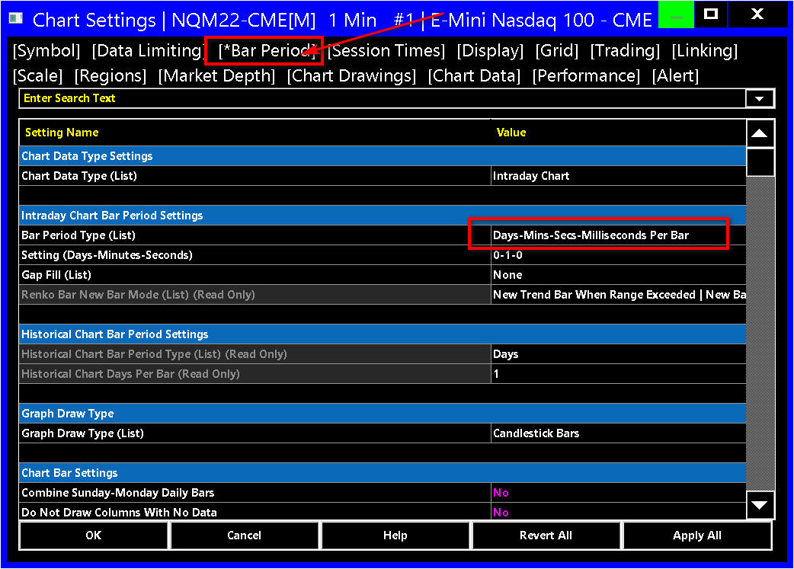
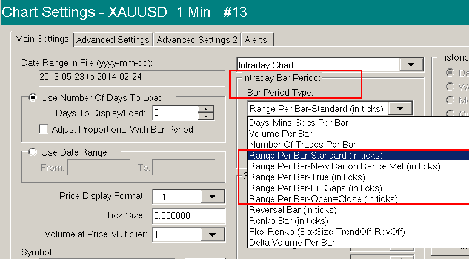
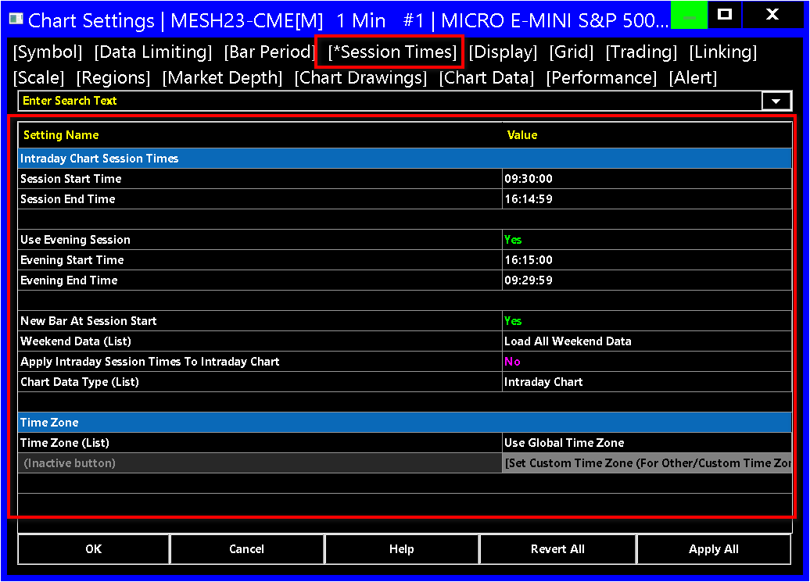

Chart Settings
- Chart Settings Window
- New Chart Settings Window
- Symbol
- Symbol (text box)
- Trade and Current Quote Symbol
- Use as Trade Only Symbol
- Automatically Rollover Futures Symbol
- Continuous Contract
- Price Display Format
- Tick Size
- Auto Set From Data Feed
- Real-Time Price Multiplier
- Historical Price Multiplier
- Volume and Open Interest Multiplier
- Volume Value Format
- Currency Value Per Tick
- Invert Prices
- Do Not Change Symbol Settings for Chart on Symbol Change
- Trade and Current Quote Symbol Price Multiplier
- Apply Global Symbol Settings
- Edit Global Symbol Settings
- Data Limiting
- Date Range and Limiting Method >> Date Range in File From / To
- Chart Data Type
- Load Data limiting Method
- Days to Load for Intraday Chart Data Type
- Days to Load for Historical Chart Data Type
- Adjust Proportional With Bar Period
- Load Data Limiting Method: Date Range >> Date Range From / To
- Volume Filter
- Filter Trade Completely
- Bar Period
- Chart Data Type
- Intraday Chart Bar Period >> Bar Period Type
- Time Period Per Bar / Amount of Data Per Bar
- Days-Mins-Secs Per Bar (Time Specific Bars)
- Volume Per Bar
- Number of Trades Per Bar
- Range Per Bar - Standard (in ticks)
- Range Per Bar - New Bar on Range Met (in ticks)
- Range Per Bar - True (in ticks)
- Range Per Bar - Fill Gaps (in ticks)
- Range Per Bar - Open=Close (in ticks)
- Range Per Bar - New Bar on Range Met & Open = Close (in ticks)
- Reversal Bar (in ticks)
- Renko Bar (in ticks)
- Aligned Renko Bar (in ticks)
- Flex Renko Bar
- Flex Renko Bar Inverse Settings
- Delta Volume Per Bar
- Price Change Bar
- Monthly Bars (Intraday Charts)
- Point and Figure Bar (Intraday Charts)
- Historical Chart Bar Period >> Weekly
- Historical Chart Bar Period >> Monthly
- Historical Chart Bar Period >> Quarterly
- Historical Chart Bar Period >> Yearly
- Intraday Chart Bar Period >> Settings
- Intraday Chart Bar Period >> Gap Fill
- Renko Bar New Bar Mode
- Historical Chart Bar Period Type
- Historical Chart Days Per Bar
- Graph Draw Type
- Combine Sunday-Monday Daily Bars
- Do Not Draw Columns With No Data
- Include Columns With No Data
- Include Saturday-Sunday Bars For Daily Charts
- Include Weekend Columns Before First Trade
- Session Times
- Display
- Chart Update Interval in Milliseconds
- Display Main Price Graph Values in Values Windows
- Chart Values >> Settings (Button)
- Autowrap Chart Header
- Limit Price Displayed to N Right Characters
- Lock Fill Space
- Number of Forward Columns
- Title Bar Name
- Use Title Bar Name as Tab Label
- Hide Volume Numbers From Current Traded Volume Columns
- Grid
- Trading
- Support Chart Values Tool for Trading DOM Mode
- Order Fills Start Date-Time
- Start Time for Trades List
- Extend Chart DOM Across Entire Chart When Using Ctrl/Alt
- Use Order Fill Calculated Trade Position Data
- Use Last In First Out Fill Matching
- Clear Trade and Current Quote Symbol on Symbol Change
- Always Simulate Bid and Ask Prices During Replay
- Load Order Fills for Multiple Futures Contracts
- Filter Initial Fills Which Are Part of Existing Position
- Open Position Average Price
- Attach Trade Window to Right Side
- Align Order Cancel (X) Button to Right
- Align Trade Drawings Text to Right
- Transparent Trade Drawings
- Load Order Fills for Current Day Only
- Profit/Loss Format
- Trade Drawings Left Align %
- Display Trade Account Below Trade Mode Box
- Use Symbol Commission Setting in Trade List and Statistics Calculations
- Linking
- link Number (List)
- Chart Linking >> Symbol
- Chart Linking >> Bar Period
- Chart Linking >> Scroll Position
- Chart Linking >> Session Times
- Chart Linking >> Studies
- Chart Linking >> Days to Load
- Chart Linking >> Bar Spacing
- Chart Linking >> Trade Window
- Chart Linking >> Vertical Scale
- Chart Linking >> Trade/Quote Symbol
- Chart Linking >> Master Mode
- Apply to Linked Charts (Button)
- Scale
- Scale (Button)
- Use Left Side Scale
- Highlight Timescale Dates, Months and Years
- Hide Values Scale
- Hide Time Scale
- Display Day of Week with Dates on Intraday Chart Time Scale
- Include Seconds on Intraday Chart Timescale
- Reset Scales on Symbol Change in Chart
- Display Months as Names on Intraday Time Scale
- Regions
- Market Depth
- Maximum Market Depth Data Days to Load
- Load Bid/Ask Update Only Intraday Records
- Use Large Number Display Formatting for Market Depth Window
- Maximum Market Depth Levels
- Number of Levels for Bid/Ask Depth Calculations
- Market Depth Combine Increment in Ticks
- Number of Decimal Places for Market Depth Quantities
- Draw DOM Graph On Chart
- Show Volume Numbers
- Only Bid/Ask Levels with Greatest Volume
- Only Single Level with Greatest Volume
- Show Volume Totals and Percentages
- Show Spread
- Show Bid/Ask Prices
- Width in Bars
- Chart Drawings
- Draw Highlight Drawings Underneath Main Graph and Studies
- Draw Non-Highlight Chart Drawings Underneath Main Graph and Studies
- Draw Advanced Custom Study Drawings Above Other Drawings
- Adjust Tool Values to Tick Size
- Copy Chart Drawings from Chart #'s
- Hide / Disable User Drawn Chart Drawings from Other Charts
- Show Chart Drawings For Different Symbols
- Show Hidden Drawings
- Allow Modification of Chart Drawings From Other Charts
- Value Increment per Bar in Ticks (Price Unit per Bar in Ticks)
- Chart Data
- Split Data Records (applies to Tick, Volume and Range charts)
- Allow Real-Time Updating of Historical Chart
- Allow Zero Values
- Disable Data File Updating (Disable Historical Data Download)
- Historical Pullback Data
- Set Dates To Exclude (Button)
- Combine Trades into Original Summary Trade (Data Feed and Exchange Specific)
- Load Empty Bars for Date Range
- Include Odd Lot Equity Trades
- Volume Multiplier for Time Sales
- Include Saturday Sunday Bars in Daily Chart When Create New Bar
- Save Days to Load, Intraday Bar Period, Graph Draw Type as Default
- Volume at Price Multiplier
- Performance
- Alert
- Alerts (opens a new page)
- Determining References to Chart
- Decimal Point Position for Main Price Graph
Chart Settings Window
To display the Chart Settings window go to the chart and select Chart >> Chart Settings on the menu.
Press OK to saves changes or Cancel to cancel changes.
Default Settings
When you open a new chart, change the symbol of the chart, or press the Apply Global Symbol Settings button on the Chart Settings window, then the following settings will automatically be set from the defined Global Symbol Settings in Global Settings >> Symbol Settings, if they exist for the symbol or there is a matching symbol pattern:
- Tick Size
- Price Display Format
- Currency Value Per Tick
- Real-Time Price Multiplier
- Historical Price Multiplier
- Intraday Session Times
- Trade and Current Quote Symbol
For more information, refer to Global Symbol Settings.
You have the ability to set the Days to Load, Intraday Bar Period, and the Graph Draw Type to default settings when you open a new chart. For more information refer to the Save Days to Load, Intraday Bar Period, Graph Draw Type as Default setting.
New Chart Settings Window
Newer versions of Sierra Chart have a new implementation of the Chart Settings window. This Chart Settings window is based upon the new Settings Windows gradually being implemented within Sierra Chart.
Refer to the Settings Windows video.
The old Chart Settings window is fully unacceptable and based upon Microsoft Windows Dialog functionality. It is very difficult working with these types of dialogs when it comes to implementation and programming, and organizing settings within them. They are inherently impossible to adapt to other languages and they malfunction at times, and they are very windows operating system resource inefficient. The font size and face of these old dialogs (referring to the old Chart Settings window) cannot be changed or changed easily. The colors also cannot be changed or changed easily. Any attempt to change them, if possible, results in changing the settings throughout the entire operating system and you will end up with an appearance that still is not acceptable and have various side effects. These old dialogs also flicker and have performance issues.
The old Chart Settings window will never be added back. This is something that Sierra Chart engineering would never consider at all. We understand when there is a significant change and users have become accustomed to a particular prior design and implementation, that they learn to "like" the old design and implementation. However, this old dialog design is terrible/unacceptable for numerous reasons which we have explained above. It is important to break free from these wicked and evil and hugely substandard and inefficient and poor quality Microsoft dialog windows, and be supportive of Sierra Chart, with the new enhanced functionality. We do not need to hear complaints! As we have said on the Support Board, we are not going to be influenced by complaints related to wanting the old dialog back. That will not happen. What we will do, is a gradual improvement of the new functionality which we have done since the initial release.
And we are certain, that if Sierra Chart has had these new Settings Windows, for years, and then we went and replaced them with these Microsoft dialog windows, that we would then get complaints of wanting the old interface back. Once again it is a matter of what you have become accustomed to.
The implementation of these new Chart Settings windows, has much less operating system reliance as compared to these old dialogs and can be ported to other operating systems. This is critical to allow Sierra Chart to be ported to another operating system.
The new Chart Settings window and all of the new Settings Windows do not at this time support any keyboard functionality to navigate among settings or change a setting to/from Yes/No. This functionality may come later. Newer versions do support the Enter key to close the Chart Settings window and save the settings. And the Escape key to close the Chart Settings window and not save the settings.
The new Chart Settings window has the following features and functionality.
The user interface behavior of the new Settings Windows that this Chart Settings window is based upon can be changed. Refer to Changing User Interface Behavior.
The new Chart Settings window is very well organized with all of its settings where related settings are grouped together under each tab, and labeled appropriately. There are many more tabs with descriptive names.
Over time, the organization of the different settings in the Chart Settings window will be improved upon. We will add new tabs and additional subcategories as necessary. This is a gradual process based upon the usage of the window and feedback received. It has already been substantially improved over what has been released previously. For example, there is a new Trading tab where all trading related settings are on a single tab and grouped appropriately.
The Colors and Font size and appearance are fully customizable! This is a major feature to be able to customize, the font and colors of a settings interface. Previously with the old dialogs, the operating system gave you very very limited control of this and any changes would affect the entire system.
These windows are fully resizable including the width of the settings columns. The size and position of the Chart Settings window is remembered for each chart that it belongs to. The resizing functionality is absolutely essential based upon monitor resolution. It has been an ongoing issue where some old dialog windows appear too small or are too large and not fully visible. These problems no longer exists with these new Settings Windows.
Each chart has its own Chart Settings window which is modeless, meaning that you can interact with the chart at the same time that the Chart Settings window is open. So you can make changes, and then go right back to the chart, and still keep the Chart Settings window open. Multiple Chart Settings windows can be open at the same time.
These windows are extremely fast, flicker free, and use next to no Windows resources unlike the heavy resource utilization of these unstable Microsoft dialog windows which the previous Chart Settings window used.
The previously selected tab is restored when opening the Chart Settings window.
The ability to search for settings by typing the name of the setting.
We also want to point out that the A and C buttons that display to the right when editing a setting in a Settings window are optional. You do not have to press the A button to accept the setting. You only need to press OK or change the focus to a different setting. This is all.
All of the above is a massive and extraordinary improvement over what existed previously. We do not think there is any type of software settings type interface, as customizable as what Sierra Chart produced.
Symbol
Symbol (text box) (Chart >> Chart Settings >> Symbol >> Symbol menu)
This text box contains the symbol of the chart. You can press the Find button beside it to select a different symbol.
Trade and Current Quote Symbol (text box) (Chart >> Chart Settings >> Symbol >> Symbol menu)
This is an optional Symbol setting which can be used to place a trade for a different symbol than what is displayed in the chart and update the Current Quote data (Data displayed in Window >> Current Quote Window and current market depth data in the chart) in the chart with this symbol.
Use the Find button to select the symbol from the Find Symbol interface.
The Trade and Current Quote Symbol can be automatically set when setting or changing the Symbol of the chart, by setting this Trade and Current Quote Symbol in the Global Symbol Settings for the main symbol of the chart.
Also refer to Clear Trade and Current Quote Symbol on Symbol Change.
Trade and Current Quote Symbol Uses
The following sections describe how the Trade and Current Quote Symbol can be used:
Symbol for Trading
If the symbol used for Trading is different than the symbol of the chart data file, then enter this Trading symbol in this box.
This allows you to trade from the chart using the symbol specified in this box, and to receive market depth data, Bid and Ask data, and the data for the Window >>Current Quote Window using the connected Trading service in the copy of Sierra Chart where you are entering this symbol.
This setting does not affect the data used for chart bars themselves . The chart bars are always from the data in the chart data file specified by the main Symbol setting of the chart.
If the option for Use as Trade Only Symbol is selected, then the Market Depth Data, Bid and Ask data, and Current Quote Window will reflect the main Symbol setting and not the symbol specified in the Trade and Current Quote Symbol box.
When setting a Trade and Current Quote Symbol and the option for Use As Trade Only Symbol is not checked, the last trade price box on the right side price scale, uses the data from the Trade and Current Quote Symbol and not from the last trade price marked on the last price bar.
When setting a Trade and Current Quote Symbol and the option for Use As Trade Only Symbol is checked, the last trade price box on the right side price scale, uses the data from the main Symbol setting of the chart.
Since the Current Quote data for the chart will be for the specified Trade and Current Quote Symbol when the Use As Trade Only Symbol is not checked, in the case of a Historical Daily chart this will affect the last bar in the chart since the Current Quote data is added to the last bar in the chart. Therefore, if the Trade and Current Quote Symbol has pricing which is significantly different compared to the main Symbol of the chart, then the last bar in a Historical Daily chart will be incorrect.
If the Use As Trade Only Symbol option is checked, then in the case of a Historical Daily chart the last bar in the chart will not be affected since the Current Quote data is for the main Symbol of the chart.
When using this symbol for trading, the Tick Size that is used is the Tick Size set on the main symbol in the Chart >> Chart Settings window. The Chart >> Chart Settings >> Symbol >> Real-time Price Multiplier setting is also applied to the pricing for the Trade and Current Quote Symbol and this multiplier effect is removed when the prices are submitted to the connected Trading service or to the Trade Simulation system.
Therefore, if this Real-time Price Multiplier should not be applied to the Current Quote data and it needs to be set at a value other than 1, then the only way to prevent this is to have the option for Use As Trade Only Symbol checked, otherwise there is no way to prevent it and the specified Trade and Current Quote Symbol cannot be used as a Trade Symbol. You can see the effect of this multiplier through the Window >> Current Quote Window for the Trade and Current Quote Symbol data.
The Trade and Current Quote Symbol should not be used during a chart replay or back testing. It is meant to be used for either non-simulated or simulated trading using the currently updating data feed for the symbol of the chart. Otherwise, the price data used to fill the orders will be based upon the underlying symbol of the chart and therefore this may not make any logical sense.
If the pricing of the Trade symbol is significantly different than the chart symbol, then this potentially can be resolved by setting the Real-Time Price Multiplier to cause the Trade symbol to more closely match the chart symbol. When submitting an order, this multiplier adjustment is removed. So the order price will still be correct.
Updating Currency Value per Tick for Trade Symbol
When setting the Trade and Current Quote symbol, it is necessary to update the Currency Value Per Tick setting to correspond with this symbol for proper Profit/loss calculations.
For additional information, refer to Profit/Loss Calculations and Symbol Settings.
Automatic Rollover of Symbol (Chart >> Chart Settings >> Symbol menu)
If the Trade and Current Quote Symbol is a futures symbol and the main Symbol field is also a futures symbol, then when performing a rollover of the main Symbol through Chart >> Perform Futures Symbol Rollover, then the Trade and Current Quote Symbol is also rolled over to the same contract month automatically.
There is no need to manually change it.
Use as Trade Only Symbol (Chart >> Chart Settings >> Symbol >> Symbol menu)
This option applies to the Trade and Current Quote Symbol box, and determines if the symbol entered in the Trade and Current Quote Symbol is to be used for Market Depth data, Bid and Ask data, the Current Quote Window, and for Trading, or if the symbol entered is only to be used for Trading.
When this option is not selected, then the symbol entered in the Trade and Current Quote Symbol box will be used for Market Depth Data, Bid and Ask Data, the Current Quote Window, and for Trading.
When this option is selected, then the symbol entered in the Trade and Current Quote Symbol box will only be used for trading purposes.
Automatically Rollover Futures Symbol (Chart >> Chart Settings >> Symbol >> Symbol menu)
It is not recommended that this setting be enabled! It should be disabled. You should perform a rollover to the next futures contract manually only. There will be a message displayed on the chart when the chart is open, indicating if it needs to be rolled over. There is also the Detect Rollover of Current Futures Contract Symbols Based on Real-time Volume option in Global Settings >> General Settings which will also provide a notice on the chart.
When the Automatically Rollover Futures Symbol option is enabled, then this means that when the symbol of the chart is set to a futures symbol, and a date-based rollover rule is defined for the symbol pattern, an automatic rollover to the current futures symbol will be performed according to the date-based rollover rules in Global Settings >> Symbol Settings for the matching symbol pattern, when the chart is reloaded.
The rollover will only occur when the Chartbook the chart is contained within is opened or the chart is reloaded with Chart >> Reload and Recalculate.
To manually initiate a rollover at other times, refer to Changing to a New Futures Contract Month.
The rollover rules use the exchange rules to determine a particular date for rollover. Daily trading volume is not used to determine the rollover time with this particular setting.
This date can be moved forward by a number of days through the Global Settings >> General Settings >> Additional Days to Add to Rollover Date for Automatic Chart and Quote Board Rollovers setting.
A rollover rule for the symbol may not be defined, in which case an automatic rollover will not occur.
For further details about defining rollover rules for a symbol or to change the rollover rules, refer to Global Symbol Settings.
Rollover Based on Volume : To get an indication to rollover a futures contract symbol based upon when the volume in the next contract month becomes greater than the current contract month, enable the Detect Rollover of Current Futures Contract Symbols Based on Real-time Volume option in Global Settings >> General Settings.
Continuous Contract (Chart >> Chart Settings >> Symbol >> Symbol menu)
For documentation for this feature, refer to Continuous Futures Contract Charts.
Price Display Format (Chart >> Chart Settings >> Symbol >> Symbol Settings menu)
Price Display Format sets the format to use for the display of price values for the main price graph in the chart.
There are many decimal formats and fractional formats available.
When there is a study which replaces the main price graph, then this setting has no effect unless the Value Format of the study is set to Inherited.
This setting has no effect on the internal precision of the data which is used in study calculations.
The Price Display Format setting will be automatically set if there are Global Symbol Settings in Global Settings >> Symbol Settings defined for the exact symbol or a symbol pattern matching the symbol.
If there are no Global Symbol Settings defined for the symbol, then the Price Display Format will be automatically set from the connected Data or Trading service, if supported, when Sierra Chart is connected to the data feed (File >> Connect to Data Feed) and the Auto Set from Data Feed option is enabled. If this option is enabled, then it is necessary to disable it in order to be able to manually change the Price Display Format setting. Not all Data and Trading services support providing Price Display Format data for a symbol.
Tick Size (Chart >> Chart Settings >> Symbol >> Symbol Settings menu)
The Tick Size setting for a chart is the minimum value that a symbol moves by. For example, the Mini S&P 500 futures contract has a tick size of .25.
Although depending upon how the data feed quotes prices, this could be different depending upon the symbol.
US stocks typically have a tick size of .01. Set this setting to the tick size for the symbol of the chart. This setting is used for the trading functions, by some studies, scaling, and various charting related features. This is a critical setting that needs to be correct.
The Tick Size setting will be automatically set if there are Global Symbol Settings in Global Settings >> Symbol Settings defined for the exact symbol or a symbol pattern matching the symbol.
If there are no Global Symbol Settings defined for the symbol, then the Tick Size will be automatically set from the connected Data or Trading service, if supported, when Sierra Chart is connected to the data feed (File >> Connect to Data Feed) and the Auto Set from Data Feed option is enabled. If this option is enabled, then it is necessary to disable it in order to be able to manually change the Tick Size setting. Not all Data and Trading services support providing Tick Size data for a symbol.
It is not recommended to change the Tick Size unless you know what you are doing. However, you can change this to meet special requirements that you have. Using a different Tick Size does affect Studies and Drawing Tools dependent on the Tick Size.
If you change the Tick Size, you also need to change the Price Display Format and Currency Value per Tick settings to correspond to the new tick size.
To always use a certain Tick Size for a particular symbol which is different from the default Tick Size or if there is no default, then set that through Global Settings >> Symbol Settings for the symbol or symbol pattern. Refer to Global Symbol Settings.
After changing the Tick Size on a Trade DOM, you may want to use the Auto Scale the Chart DOM command.
The Tick Size can be automatically set from the defined Global Symbol Settings for the symbol. To do this, press the Apply Global Symbol Settings button on the Chart Settings window.
Auto Set from Data Feed (Chart >> Chart Settings >> Symbol >> Symbol Settings menu)
When this option is enabled, then the Price Display Format, Tick Size, Currency Value Per Tick, and the Real-time Price Multiplier will be automatically set from the connected Data or Trading service when Sierra Chart is connected to the data feed (File >> Connect to Data Feed).
Not all Data and Trading services support providing data for these settings. Some settings may be automatically set and some settings may remain at the default.
Real-Time Price Multiplier (Chart >> Chart Settings >> Symbol >> Symbol Settings menu)
Sets the multiplier for the real-time price data received from the connected data feed. This is used for the last bar in a Historical Daily chart, Bid and Ask data, market depth data, and the last price display you see on the right side of the chart, and the values in Window >> Current Quote Window.
This setting is automatically set for the symbol. If you make changes to this setting, it will be necessary to adjust the Price Display Format and Tick Size settings in the Chart Settings window to correspond to the changes. For example, if the Real-time Price Multiplier is set to 10 from 1, then it is necessary to decrease the Price Display Format by one decimal point and increase the Tick Size by 10.
Historical Price Multiplier (Chart >> Chart Settings >> Symbol >> Symbol Settings menu)
Sets the multiplier for the Open, High, Low, and Last chart bar values for both Historical and Intraday charts. In the case of Historical charts, this setting may not affect the very last displayed bar if that has been updated by the real-time data feed.
This setting can be used to adjust Historical Daily data in the chart to match the price format used by the real-time data feed, in case the chart is using Historical Daily chart data from a source other than provided by the Data or Trading service you are connected to.
This setting only adjusts the historical data which is loaded from the chart data file. It does not adjust the real-time price data which is used for the last bar in a Historical Daily chart, or the market depth and current quote data in the chart. To adjust the real-time data, use Real-Time Price Multiplier .
In the case of Intraday charts, this setting is useful for adjusting the position of the decimal place of the values in the chart.
This setting is automatically set for the symbol. If you make changes to this setting, it will be necessary to adjust the Value Format and Tick Size settings in the Chart Settings window to correspond to the changes.
Volume and Open Interest Multiplier (Chart >> Chart Settings >> Symbol >> Symbol Settings menu)
Sets the multiplier for the Volume and Open Interest (OI) data for the historical data in the chart for the symbol. You can either directly specify a value or select one from the list.
Open Interest only applies to Historical Charts (Daily, Weekly, Monthly, Quarterly, Yearly).
In the case of Historical charts, this multiplier does not apply or affect the volume provided from the real-time data feed. It only applies to the historical data in the Chart Data file for the symbol of the chart.
In the case of Intraday charts the multiplier applies to the individual Intraday chart data file records loaded into the chart. So if the data records consist of 1 Tick, then this multiplier affects individual trades.
Therefore, in the case of Intraday chart data, When using a multiplier that is less than 1 since volume is stored as integers, this reduces the accuracy of volume and causes loss of volume because the portion of the volume shifted to the right of the decimal is completely lost.
Volume Value Format (Chart >> Chart Settings >> Symbol >> Symbol Settings menu)
This setting only applies to symbols which use fractional volumes/quantities. Currently this is only the case with Crypto Currencies and Bitcoin markets.
The default for this setting is 1 and that is what it must be when the symbol does not use a fractional volume/quantity.
It specifies what the actual volume is for every integer 1 unit of volume. For example, if it is set to .1, then a volume of 1 would be displayed as .1.
Currency Value Per Tick (Chart >> Chart Settings >> Symbol >> Symbol Settings menu)
This is the value that each Tick Size is worth in the currency for the particular symbol.
For example, if a futures contract is equivalent to a 1000 units of the underlying that the contract is for, then this should be set to 1000 times the Tick Size.
For a COMEX Gold Contract which is equivalent to 100 ounces of gold and has a Tick Size of 0.1, the Currency Value Per Tick will be 10.
Invert Prices (Chart >> Chart Settings >> Symbol >> Symbol Settings menu)
When Invert Prices is enabled, the Open, High, Low and Close/Last prices of the chart bars are inverted by dividing 1.0 by these price values. For example: 1.0/Open.
This is useful for currency charts which will give you the exchange rate in reverse.
When enabling Invert Prices you may need to change the chart Tick Size and the Price Display Format to match the new values appropriately.
If either the Open or Close of a chart bar is higher than the high price of the bar, then the high price is adjusted up to match either the Open or Close, whichever is higher.
If either the Open or Close of a chart bar is lower than the low price of the bar, then the low price is adjusted down to match either the Open or Close, whichever is lower.
When Invert Prices is enabled, the option Adjust Tool Values to Tick Size is ignored and no adjustments are made to match to a tick size.
If you encounter any problems with the display of prices or other data when enabling this setting, then do not use it and do not ask Sierra Chart Support for help with this. Support is not provided for this setting.
Do Not Change Symbol Settings for Chart on Symbol Change (Chart >> Chart Settings >> Symbol >> Symbol Settings menu)
When this setting is enabled, then when the symbol for a chart is changed or the chart is duplicated, the settings for the new symbol, or the default Symbol Settings for the existing symbol upon chart duplication, are not loaded. Rather, the previously existing settings are maintained.
This includes items such as: Session Times, Tick Size, and Value Format, among other symbol settings that will not be updated.
It is not recommended to use this option due to the potential for errors when changing symbols.
Trade and Current Quote Symbol Price Multiplier (Chart >> Chart Settings >> Symbol >> Symbol Settings menu)
When using a Trading service where a Real-time Price Multiplier other than 1 is required for some symbols like with the Sierra Chart Order Routing Service, and a Trade and Current Quote Symbol is being used as a Trade Only Symbol, the Trade symbol may use a different Price Multiplier as compared to the main symbol of the chart.
This is the case for CME Forex futures with the standard Forex contracts as compared to the micro contracts. For example, the real-time price multiplier for 6E futures is .0001 and the real-time price multiplier for M6E is 1. Therefore, when using M6E as a trade symbol it requires that a different multiplier be set in the chart or trading DOM.
This different multiplier is set through the Trade and Current Quote Symbol Price Multiplier setting. This multiplier only applies when the Trade and Current Quote Symbol is set. Otherwise, the multiplier is automatically set to 0 which means it is unset.
Using the example above you would set the Trade and Current Quote Symbol Price Multiplier setting to 1 if the main symbol of the chart is 6E and the Trade and Current Quote Symbol is M6E.
Apply Global Symbol Settings (Button) (Chart >> Chart Settings >> Symbol >> Global Symbol Settings menu)
This command button will apply the Global Symbol Settings defined for the symbol to the Chart Settings for the chart. For additional information, refer to the Global Symbol Settings page.
Edit Global Symbol Settings (Button) (Chart >> Chart Settings >> Symbol >> Global Symbol Settings menu)
This command button will edit the Global Symbol Settings for the symbol of the chart. When you press this button, the Global Symbol Settings window will open and the symbol will be highlighted. You will then be able to modify the settings as required. For additional information, refer to the Global Symbol Settings page.
Data Limiting
Date Range and Limiting Method >> Date Range in File From / To (Chart >> Chart Settings >> Data Limiting >> Date Range and Limiting Method menu)
The Date Range in File >> From and To dates display the first and last dates in the chart data file for the symbol of the chart.
Intraday and Historical Daily or higher timeframe per bar charts use different data files, so when you change between an Intraday and Historical type of chart, this date range will change.
The Sierra Chart Time Zone setting may adjust these displayed dates by one day. All data in the chart data file is time stamped to GMT time and the Sierra Chart Time Zone setting adjusts the timestamps to the selected time zone.
The Date Range in File >> From setting for Intraday charts can be changed. When you set it to an earlier date and press OK, you will be prompted to download additional historical Intraday data. There is no guarantee that earlier data will be available though. Therefore, after the data is attempted to be downloaded, the From date may not display the date you specified and can change back to what it was previously. This is a likely condition if you have used a date which clearly is not available.
In the case of a futures contract, to get additional historical data during the time that other futures contracts for the same underlying market were active, requires that you use the Continuous Futures Contract feature instead of altering the From date.
The Date Range in File >> To setting is not adjustable.
For another method to get more historical Intraday data for Intraday charts, refer to Downloading/Viewing More Historical Intraday Data.
To try to get more historical data for Historical Daily charts, refer to help topic 6.6. In the case of a Historical Daily chart, all data available from the server was downloaded when the chart data file was originally created, so generally you cannot download data earlier than the date shown here.
In the case of a Continuous Futures Contract chart, the Date Range in File is for the current symbol of the chart and not the historical futures contracts symbols loaded in the chart.
The Date Range displayed does not necessarily correspond to the Global Settings >> Data/Trade Service Settings >> Maximum Historical Intraday Days to Download setting. That setting is the maximum number of historical Intraday days to download when a download is done for an empty Intraday chart data file.
Chart Data Type (Chart >> Chart Settings >> Data Limiting >> Date Range and Limiting Method menu)
This control specifies the chart data type. The following are available: Historical Chart , Intraday Chart, and Intraday Chart Only.
Historical Chart data is for Daily, Weekly, Monthly, Quarterly, Yearly bars or bars of the specified number of Days.
Intraday Chart data is for any bar time frame less than 1 day. It is possible to create higher time frames per bar even with Intraday Chart data, but it is less efficient.
When this is set to Intraday Chart Only, the chart data type will always be Intraday chart data. What this means is when you use the Chart >> Daily, Weekly, Monthly, Quarterly, Yearly commands, then rather than the chart switching to use the Historical Daily data file, it will continue to use Intraday chart data.
Load Data Limiting Method (Chart >> Chart Settings >> Data Limiting >> Date Range and Limiting Method menu)
The Load Data Limiting Method setting allows you to control the days of data to load in the chart based upon either a specified Number of Days from the last date in the chart, or a Date Range.
Days to Load for Intraday Chart Data Type (Chart >> Chart Settings >> Data Limiting >> Load Data Limiting Method: Days to Load menu)
Days to Load for Historical Chart Data Type (Chart >> Chart Settings >> Data Limiting >> Load Data Limiting Method: Days to Load menu)
To use the Days to Load settings, set Load Data Limiting Method to Use Number of Days to Load.
This setting controls the maximum number of days to load into the chart and display. The number of days you enter also needs to include weekends and holidays. For example, if you enter 2, then on Monday you will see Sunday and Monday's data. Use 0 to load all data from the displayed Date Range in File >> From to the Date Range in File >> To dates. For faster data loading and calculations, use a small number.
Usually you will need to use the scroll bar at the bottom of the chart to scroll back and actually see all of the data that is loaded into the chart.
In the case of futures charts, to get more historical data which spans multiple futures contracts which is necessary for a properly displayed chart, requires that you use the Continuous Futures Contract feature and not only increase the Days to Load setting. Both have to be done.
Data in a chart is never automatically reduced as bars are added to the chart in real-time or during a chart replay, to maintain the number of days in the chart which matches the Days to Load setting. Therefore, the Days to Load setting can and will get exceeded over time. If you want to have no more days in the chart than the Days to Load setting, then at any point in time you can select Chart >> Reload and Recalculate on the menu. Or you can select Edit >> Reload All Charts. There is no way to overcome this. This is normal operating behavior and is how charts are designed and is not changeable.
You will also notice that when the amount of data in a chart is reduced, there is going to be a corresponding reduction of memory use by Sierra Chart.
In the case of Intraday charts, when historical data is being downloaded into the chart, then additional data will be loaded into the chart beyond what was initially loaded from the local data file on your system. Therefore, the Days to Load setting will get exceeded. When the historical Intraday data download is complete for the symbol, if you want to have no more days in the chart than the Days to Load setting, then select Chart >> Reload and Recalculate on the menu to load only the Days to Load .
This setting does not control how many days of data are downloaded from the remote data service. In the case of Historical Daily data, all historical Daily data available is downloaded from the data service. In the case of Intraday data, this is controlled through the Global Settings >> Data/Trade Service Settings >> Maximum Historical Intraday Days to Download settings.
Adjust Proportional With Bar Period (Chart >> Chart Settings >> Data Limiting >> Load Data Limiting Method: Days to Load menu)
To use this option, enable Use Number of Days to Load.
When this option is enabled, then the Days to Load setting is automatically adjusted to be proportional with the Intraday Bar Period.
For example, if the chart is set to load 30 days of data, the chart bars are currently set to 1 minute bars, this option is enabled and you change to 5 minute bars, then the Days to Load setting will be adjusted to 150 days.
Adjustments to Days to Load will also be made when working with Number of Trades, Volume, Range, Reversal, Renko, Delta Volume, Price Change, Point and Figure Bars.
Load Data Limiting Method: Date Range >> Date Range From / To (Chart >> Chart Settings >> Data Limiting >> Load Data Limiting Method: Date Range menu)
These settings only apply, when Load Data Limiting Method is set to Use Date Range.
The From and To settings specify the First and Last dates of data to load into the chart from the data file. The date format is: YYYY/MM/DD. Normally the To field will be blank and should be blank because it means load until the last date available.
If the From field is left blank, then this implies that the first date available in the data file will be loaded into the chart. If the To field is left blank, than this implies that the last date available in the data file will be loaded into the chart.
These settings are useful to look at days in an Intraday chart data file that go back a significant amount of time, without having to load all the data up to the current Date.
The Use Date Range >> From setting is also useful to specify date of Sunday or Monday when using an Intraday chart bar timeframe of 7-0-0 (7 Days/Weekly).
{kind=link}
Volume Filter (Chart >> Chart Settings >> Data Limiting >> Volume Filter Settings menu)
The Volume Filter settings are located in Chart >> Chart Settings >> Data Limiting.
When a nonzero value is entered for Exclude >= , this will filter the volume from trades from the chart bars that have a volume that is greater than or equal to the specified value. When a data record in the underlying data file has a volume which is greater than or equal to this setting, then its Total Volume, Bid Volume, and Ask Volume are all set to 0 and the volume will not be added to any of the Volume related studies on the chart.
When a nonzero value is entered for Exclude <= , this will filter the volume from trades from the chart bars that have a volume that is less than or equal to the specified value. When a data record in the underlying data file has a volume which is less than or equal to this setting, then its Total Volume, Bid Volume, and Ask Volume are all set to 0 and the volume will not be added to any of the Volume related studies on the chart.
When Filter Trade Completely is unchecked, the price of the trade is still included in the chart bars. However, the Number of Trades for the chart bars is reduced by the number of trades which had the volume filtered. So in effect the Number of Trades field in the underlying Intraday data file record is set to 0 when it is loaded in the case where the volume was filtered as well.
Note: If you have set Volume Filter >> Exclude <= to 1 and the volume of each trade in the file, assuming the file contains tick by tick data, is 1 as is normally the case with Forex data, then all of the volume data will be filtered.
These settings will only work accurately when there is tick by tick data in the data file. Otherwise, the accuracy of these settings is greatly reduced and not likely to give accurate results.
For instructions to store tick by tick data in an Intraday chart data file, refer to the Tick by Tick Data Configuration documentation.
To remove the trade completely when the volume matches these settings, enable the Filter Trade Completely option. Enabling this option will cause the price bars to look less complete and it is normally not recommended to use this option.
{kind=link}
It is important to understand whether this feature will even be useful for you. For additional information, refer to Large Volume Trades.
Volume Filters Exclude LesserOrEqual GreaterOrEqual
How to Use Multiple Volume Filters in a Chart
The following instructions explain how to have multiple price graphs in the same chart or multiple studies in the same chart, which are based upon different Volume Filter settings.
- Open a separate chart for each additional Volume Filtering rules that you want. For instructions, refer to Opening Charts.
- Follow the instructions in the Volume Filter section to set the volume filtering on each of those charts as you require.
- Add all of the studies that you want to have use particular Volume Filtering settings, to the chart with the volume filtering set as you require. Do this for each of the charts. For instructions, refer to Adding/Modifying Studies.
- On the chart that you want to contain the price graphs or the studies based upon the particular volume filtering you have set on the other charts, overlay those on the destination chart that you want to see them on, by using the Study/Price Overlay study.
Filter Trade Completely (Chart >> Chart Settings >> Data Limiting >> Volume Filter Settings menu)
Refer to the Volume Filter documentation for information about the Filter Trade Completely setting.
Bar Period
Chart Data Type (Chart >> Chart Settings >> Bar Period menu)
Refer to the information for this item in the Date Limiting >> Chart Data Type section.
Time Period Per Bar / Amount of Data Per Bar (Chart >> Chart Settings >> Bar Period menu)
{kind=link}
To access these controls select Chart >> Chart Settings. Select the Main Settings tab. These controls set the time period or the amount of data for each bar/column in the price graph.
A chart column is single column of data in the chart. A column consists of the main price graph bar and any study graph elements in that same column.
For instructions to quickly change the bar period, refer to the Changing the Period of the Chart Bars documentation page.
Intraday Chart Bar Period >> Bar Period Type >> Settings (Days-Minutes-Seconds-Milliseconds) (Chart >> Chart Settings >> Bar Period menu)
This setting is accessed through Chart >> Chart Settings.
This Bar Period Type setting is for Intraday charts only.
This sets the number of Days, Minutes, Seconds and Milliseconds per bar/column in the chart. A bar occupies one column in the chart. There are 4 ways bar periods can be entered:
| Days-Minutes-Seconds-Milliseconds | 0-0-1-500 | (1 second and 500 milliseconds per chart column) |
| Days-Minutes-Seconds | 1-0-0 | (1 Day per chart column) |
| Minutes-Seconds | 5-30 | (5 Minutes and 30 Seconds per chart column) |
| Minutes | 5 | (5 Minutes per chart column) |
Seconds Bars (Time Specific Bars)
The following applies to the Bar Period >> Intraday Chart Bar Period Settings >> Bar Period Type >> Days-Mins-Secs-Milliseconds Per Bar setting.
If you specify a setting of less than 1 Minute, then the time period of a chart bar may exceed your setting if it is not a multiple of the timeframe of the underlying data records in the data file, or the timeframe of the data records in the data file exceed your setting.
For example, if your Data or Trading service provides historical data in 1 Minute timeframe units, then the bars in the chart built from this historical data will not have a period less than 1 Minute.
To ensure your data records are in the smallest possible unit, select Global Settings >> Data/Trade Service Settings >> Common Settings from the menu. Set the Intraday Data Storage Time Unit to 1 Second or less.
1 Day Bars (Time Specific Bars)
The following applies to the Intraday Chart Bar Period >> Bar Period Type >> Days-Mins-Secs-Millisecs Per Bar setting.
To create a Daily chart from Intraday data, use a setting of 1-0-0. When you create a 1 Day per bar (1-0-0) chart using an Intraday chart, the Date-Time of the bar will be the starting Date-Time of that bar. This Date could be one day earlier than the corresponding bar in a Historical Daily chart. The Date may be one day earlier only if the Session Start Time of the Intraday chart is later than the Session End Time and starts in the previous day. With a 1 Day per bar chart created from Historical Daily data, the Date of each bar will have the primary trading session Date.
Weekly Bars (Time Specific Bars)
The following applies to the Intraday Chart Bar Period >> Bar Period Type >> Days-Mins-Secs-Millisecs Per Bar setting.
To create a Weekly chart from Intraday data, use a setting of 7-0-0. This is unlike Historical charts, which would use a setting of Weekly or 5 Days . To have Weekly bars start on a Sunday it is necessary to set Chart >> Chart Settings >> Use Date Range >> From to a Sunday Date in the past. You may also need to adjust the Session Times.
Intraday Chart Bar Period >> Bar Period Type >> Volume Per Bar (Chart >> Chart Settings menu)
This setting is only for Intraday charts. To create chart bars based upon a specified amount of trading volume, select the Volume Per Bar option in the Bar Period Type list and enter the Volume per bar that you want each bar to be based on, in the box below. Do not use commas or any delimiters in the number.
For example, with a setting of 100000, each bar will be equal to or greater than 100000 shares/contracts of trading.
It is recommended that you enable Chart Settings >> Chart Data >> Split Data Records when using Volume bars.
For the chart bars which are based upon a Volume Per Bar it is necessary to have tick by tick data in the Intraday chart data file. Refer to Tick by Tick Data Configuration for instructions. This is an essential step to follow.
For additional information to ensure that you always get a Volume Per bar that matches the setting, refer to help topic 47.
When using Volume Per Bar, it is necessary that New Bar at Session Start be enabled. Otherwise, the starting Date-Time for building the volume bars is always going to be relative to beginning Date-Time in the chart which can change over time. The beginning Date-Time is going to be based upon the Days to Load setting. Every time there is a change with the beginning Date-Time in the chart, then this is going to cause a change with the formation of the volume based chart bars.
If you do not enable New Bar at Session Start , then one solution to maintain stable volume bars is to enter a starting date in the Load Data Limiting Method: Date Range >> Date Range From box and keep get the same as long as you can.
Intraday Chart Bar Period >> Bar Period Type >> Number of Trades Per Bar (Chart >> Chart Settings menu)
The Number of Trades Per Bar setting is for Intraday charts only. This sets the number of trades or ticks per bar. A tick is a trade. Each bar will be based on the specified number of trades instead of a time specific period. Select this option and enter the number of trades you want per bar in the box below this setting.
For the chart bars which are based upon a Number of Trades Per Bar it is necessary to have tick by tick data in the Intraday chart data file. Refer to Tick by Tick Data Configuration for instructions. This is an essential step to follow.
Depending upon the Data or Trading service you are using, to ensure you always get the number of trades per bar that matches your setting, you may need to refer to help topic 47.
If you want to see each individual trade in the chart, then use the Number of Trades Per Bar Bar Period Type and set the value for it to 1. To reduce the amount of memory usage and chart data loading time, set the particular date range in the chart to only the days you need to view through the Load Data Limiting Method: Date Range >> Date Range From/To Chart Settings.
Intraday Chart Bar Period >> Bar Period Type >> Range Per Bar - Standard (in ticks) (Chart >> Chart Settings menu)
{kind=link}
This setting is only for Intraday charts. To create a Range bar chart where the range of each bar in the chart is the price range that is specified, then select Range Per Bar-Standard from the Bar Period Type list. Enter the range you want each bar to be in Ticks, in the box below the Bar Period Type list. For example, if you want the range of each bar to be 1.0 and the Tick Size is .25, then enter 4 in the input box below for Range Per Bar-Standard.
In order for the Range Per Bar-Standard setting to work correctly, the Tick Size setting, also on the Chart Settings window, needs to be set correctly.
It is necessary that the Price Display Format setting, also on the Chart Settings window, is set correctly for the Symbol when using Bar Period Type >> Range Per Bar.
For additional information to ensure you always get a range per bar that matches your setting, refer to help topic 47. This help topic also provides additional information about Range Bars.
One of the most important settings is to set Global Settings >> Data/Trade Service Settings >> Intraday Data Storage Time Unit to 1 Tick.
On the Region Data Line at the top of the first region in the chart, the range will be displayed as the actual range value, rather than the number of Ticks. Therefore, if the Tick Size is .25 and you have a range of 8 Ticks, you will see 2.00 Range displayed.
- When New Bar at Session Start is enabled and there is a new session encountered, the current Range bar will be cut and no more data will be added to it. Therefore, it may not be the full specified range in this case.
- In the case where tick by tick data is not being used or not available, then if the range of the last bar is greater than the range setting when there is a new data record read from the Intraday data file, then the bar will be split and it will then equal the specified Range Per Bar setting. The direction in which the splitting occurs depends upon the direction of the last range bar. The open of the next bar will always be moved one tick outside of the prior bars range.
- The rules for determining the direction of a Range bar are as follows:
1. If the close is below the open, then the bar is down.
2. If the close is above the open, then the bar is up.
3. If the close is the same as the open, then we look at the difference between the current close and the prior close. If the current close is below the prior close, then the bar is down. If the current close is above the prior close, the bar is up. If the current close is the same as the prior close, repeat the algorithm using the next previous bar. - In the case where there is a price gap with trading and the range of the current range bar cannot be expanded to connect with the next data record because of the gap, then the current range bar is expanded and set to the Range Per Bar setting. The low of the current range bar is expanded down if the next data record is below the current range bar. Or, the high of the current range bar is expanded up if the next data record is above the current range bar.
- When a range bar is completed, the Close price of the bar is adjusted. This happens even though the price it is adjusted to is not the actual last trade price. The close price is moved to the high of the range bar if the close price is closer to the high compared to the low. The close price is moved to the low of the range bar if the close price is closer to the low compared to the high.
If the close price is equal distance between a higher level of the range bar that is now complete, then the High and Low of the completed range bar is compared to the opening price of the next bar. If the high of the completed range bar is closer to the open of the next range bar rather than the low, then the close price is moved to the high. If the low of the completed range bar is closer to the open of the next range bar rather than the high, then the close is moved to the low.
To avoid this automatic adjustment of the Last trade price for a bar use Range Per Bar - True instead. - Another adjustment which occurs, is that the Open price of a new range bar, will never be within the range of the prior range bar. If it is, it is moved one tick away from the prior bar.
To avoid this automatic adjustment of the Open price of a Range bar, use Range Per Bar - True instead.
The Open price will not necessarily be within one tick of the prior range bar Close. It can be more than this if there is a price gap with trading.
Intraday Chart Bar Period >> Bar Period Type >> Range Per Bar - New Bar on Range Met (in ticks)
Range Per Bar - New Bar on Range Met is another type of Range Bar. All of the Range Per Bar - Standard documentation applies to this Range Bar type. The exception is that with this particular type, a new bar is started when the range has met the Range Per Bar setting whether or not trading continues within the range.
It is only the case when a new underlying Intraday file record or trade, in the case of tick by tick data, is being added to a chart bar and the range of the last bar is equal to the range setting, is then a new bar started at that time. The trade that extends the bar range to the specified range, will not in and of itself start a new bar. Only the next trade will.
You may be also interested in the Range Per Bar - New Bar on Range Met & Open = Close (in ticks) Bar Period Type.
Intraday Chart Bar Period >> Bar Period Type >> Range Per Bar - New Bar on Range Met & Open = Close (in ticks)
Range Per Bar - New Bar on Range Met & Open = Close is another type of Range Bar. All of the Range Per Bar - New Bar on Range documentation applies to this Range Bar type.
The exception is that with this particular Bar Period Type, the open price of the bar is always set to the same as the prior close price.
Intraday Chart Bar Period >> Bar Period Type >> Range Per Bar - True (in ticks)
Range Per Bar - True is another type of Range Bar. All of the Range Per Bar - Standard documentation applies to this Range Bar type. The exception is that with this particular type, there is no adjustment / manipulations of the Open, High, Low or Last prices of a range bar. They are left at their accurate and true values.
Therefore, with these types of bars, you still have the basic Range bar functionality and in addition to that, a true representation of price action in the chart bars.
With Range Per Bar - True a bar could have a range less than the specified range if there is a price gap in trading. This is something you will not see with the other manipulated range bar types.
Intraday Chart Bar Period >> Bar Period Type >> Range Per Bar - Fill Gaps (in ticks)
Range Per Bar - Fill Gaps is another type of Range Bar. All of the Range Per Bar - Standard documentation applies to this Range Bar type. The exception is that with this particular type, price gaps between Range Bars are filled.
This may be useful when there are price gaps in the underlying data and you do not want to see these gaps displayed.
Intraday Chart Bar Period >> Bar Period Type >> Range Per Bar - Open=Close (in ticks)
Range Per Bar - Open=Close is another type of Range Bar. All of the Range Per Bar - Standard documentation applies to this Range Bar type. The exception is that with this particular type, the Open of a new Range Bar will always equal the previous Range Bar Close.
Intraday Chart Bar Period >> Bar Period Type >> Reversal Bar (in ticks) (ReversalAmount - MinimumLength)
The Reversal Bar setting is for creating a Reversal bar chart.
Reversal bars are very similar to Point and Figure type bars.
Reversal Bars consist of two settings. The reversal amount in ticks (according to the chart Tick Size), a hyphen (-) character, and the minimum length in ticks the bar must have before starting a new reversal bar (ReversalAmount - MinimumLength).
Example: 4-0. In this example, 4 ticks of a reversal from the high or low of the bar is required to start a new bar and there is no minimum length required.
Example: 4-8, in this example, 4 ticks of a reversal from the high or low of the bar is required to start a new bar and the minimum length required is 8 ticks.
At the first bar in the chart, the underlying price movement is monitored to determine when the current price has moved away from the first bar High or Low by the specified number of price ticks or more. If a reversal from the High occurs at the first bar, then a new bar is started and a reversal will need to occur from the Low on the next bar.
If a reversal from the Low occurs at the first bar, then a new bar is started and a reversal will need to occur from the High on the next bar.
For any given bar in the chart other than the first bar, a reversal needs to occur from the High or Low, not both. Whether it is the High or Low depends upon where the reversal occurred on the prior bar. If a reversal occurred on the prior bar from the Low, then on the next bar it needs to occur from the High.
If a reversal occurred on the prior bar from the High, then on the next bar it needs to occur from the Low.
This pattern continues through the chart. Therefore, there is a continuous alternation, between detecting a reversal from either the High and Low from bar to bar.
A new bar is only started when prices reverse from the High or the Low, depending upon which side is being monitored for, by the specified number of price ticks.
To specify the number of price ticks, enter this value in the box below Reversal Bar (in ticks).
The specified number of ticks is multiplied by the Tick Size of the chart and this is the actual value that the price has to reverse by from the High or Low of the bar.
In the case where the Minimum Length setting is greater than 0, then before a reversal can occur, it is necessary that the chart bar has the specified Minimum Length which is calculated as the difference between the High and Low of the chart bar. This difference is converted into ticks and compared to the specified Minimum Length in ticks setting. This difference must be greater than or equal to the specified number of ticks specified by the Minimum Length setting. So the Minimum Length must be met, before the reversal condition can be even evaluated.
When using a Minimum Length setting, as soon as the Minimum Length is reached, and if the price at that point is the specified number of ticks from the high if the prior bar reversed at the low, or from the low if the prior bar reversed at the high, then a new bar will be initiated which means that the opening can be the same as the closing price of the prior bar. This can mean that in the case of candlestick bars, that in some cases you do not notice any wicks for that subsequent chart bar.
When using Bar Period Type >> Reversal Bar , it is required to have tick by tick data in the Intraday chart data file for the highest accuracy. To do this, refer to the Tick by Tick Data Configuration page. This is an essential step to follow.
When New Bar at Session Start is enabled, and a new trading day begins according to the Session Times, the existing Reversal bar will be cut short and a new one will begin.
Intraday Chart Bar Period >> Bar Period Type >> Renko Bar (in ticks)
For complete details to use the Renko Bar Bar Period Type setting, refer to Renko Chart Bars.
Intraday Chart Bar Period >> Bar Period Type >> Aligned Renko Bar (in ticks)
For complete details to use the Aligned Renko Bar Bar Period Type setting, refer to Renko Chart Bars.
Intraday Chart Bar Period >> Bar Period Type >> Flex Renko Bar
For complete details to use the Flex Renko Bar Bar Period Type setting, refer to Renko Chart Bars.
Intraday Chart Bar Period >> Bar Period Type >> Flex Renko Bar Inverse Settings
For complete details to use the Flex Renko Bar Inverse Settings Bar Period Type setting, refer to Renko Chart Bars.
Intraday Chart Bar Period >> Bar Period Type >> Delta Volume Per Bar
Delta Volume bars are bars that consist of all of the price action until the absolute value of the difference between the Ask Volume and Bid Volume for a chart bar equals or exceeds the Delta Volume per Bar setting.
The Bar Period Type >> Delta Volume Per Bar setting is only available for Intraday charts. To create a Delta Volume Bar chart, select this option and enter the Delta per bar that you want each bar to be based on, in the box below.
Do not use commas or any delimiters in the number. The term "Delta" refers to the absolute value of the difference between the Ask Volume and Bid Volume for the bar. With a setting of 10000, a new bar is formed when this calculated difference for the bar exceeds +/-10000.
It is essential that the New Bar Session Start setting on the Chart Settings window is enabled when using Delta Volume Bars because this establishes a new starting point at the beginning of the trading session for the calculation of the difference of Ask Volume and Bid Volume rather than using the beginning of the loaded data which can cause inconsistencies.
Price Change Bar
Sierra Chart supports Price Change Bars. These chart bars only work with Intraday charts.
Price Change Bars track the number of price changes. A price change occurs each time there is a trade at a different price versus the previous trade. A new bar is started when the number of price changes exceeds the set number of price changes per bar setting for the bar. When a new bar is started, it has a price change count of 1.
With Price Change Bars, each bar is based on the specified number of price changes instead of a time specific period.
To create a Price Change Bar chart, select Bar Period Type and enter the number of price changes you want per bar in the box below this setting. Do not use commas or any delimiters in the number.
For Price Change Bars to work accurately, it is necessary to have tick by tick data in the Intraday chart data file. Refer to Tick by Tick Data Configuration for instructions. This is an essential step to follow.
Monthly Bars (Intraday Charts)
It is supported to create Monthly bars from Intraday data.
The Intraday Chart Bar Period >> Bar Period Type >> Monthly Bars sets the chart bars to Monthly bars.
Since these are long-duration bars it is necessary to have enough data loaded into the Intraday chart. This can be done with the Days to Load setting.
Point and Figure Bar (Intraday Charts)
For a description of Point and Figure type bars, refer to the Point and Figure Chart study. It is highly recommended to use the newer Bar Period Type >> Point and Figure Bar setting rather than the old study for Point and Figure bars. The study is only provided for back compatibility.
The Intraday Chart Bar Period >> Bar Period Type >> Point and Figure Bar (in Ticks) setting supports creating Point and Figure charts directly from the underlying data in the Intraday data file.
The Bar Period Type >> Point and Figure Bar (in Ticks) is more efficient and more accurate than the Point and Figure Chart study. When using this Bar Period Type, you will no longer use the Point and Figure Chart study on the chart.
When the Bar Period Type is set to Point and Figure Bar, enter the Box Size and the number of boxes required for a reversal in the box below separated by a hyphen. Format: [Box Size in ticks]-[Reversal Size].
The Box Size needs to be entered in ticks. Each tick is equivalent to the chart Tick Size. The Reversal Size is the number of boxes required to reverse the current bar direction. A common setting would be 1-3.
For X and O style chart bars, set the Graph Draw Type setting on the Chart >> Chart Settings >> Main Settings tab, to Point and Figure XO.
The colors for X and O bars are controlled with the Bar High-Low Down and Bar High-Low Up color settings in the Graphics Settings window.
For Open, High, Low, Close style chart bars, set the Graph Draw Type setting on the Chart >> Chart Settings >> Main Settings tab, to OHLC bars.
The colors for the standard OHLC Bars type when using Bar Period Type >> Point and Figure Bar, are controlled with the standard color settings for OHLC bars in Graphics Settings.
The true and accurate Open, High, Low and Last/Close values which represent the underlying data contained within each Point and Figure chart bar are maintained and can be viewed through the Chart Values window.
The Open value represents the first price of the chart bar and would be the price that caused a new chart bar to start. The High value is the highest price during the chart bar. The Low value is the lowest price during the chart bar. The Last value is the last trade price of the bar. The volume of the chart bar will be the volume of all of the trades contained within the chart bar. When the chart bar is displayed using either the OHLC Bars or Candlestick Bars for the Graph Draw Type, the true Open, High, Low, Last values are displayed.
The Point and Figure High and Point and Figure Low values which represent the top and bottom of each Point and Figure bar respectively, are also displayed in the Chart Values window. When using a study on a Point and Figure bar chart, and the study Input Data Input is set to use Last, then it is using the true last price of each chart bar and not the Point and Figure High or Low.
To see an indication on the last Point and Figure chart bar where a reversal will occur, add the Point and Figure Chart Reversal Marker study to the chart. The study only works with the Bar Period Type >> Point and Figure Bar setting and not the older Point and Figure Chart study.
Intraday Chart Bar Period >> Settings (Chart >> Chart Settings >> Bar Period menu)
Intraday Chart Bar Period >> Gap Fill (Chart >> Chart Settings >> Bar Period menu)
The documentation in this section for Gap Fill is effective with version 1658 and higher.
Price gaps between the Intraday chart bars can be filled with the Gap Fill setting. This setting only applies to Intraday charts.
This setting needs to be set to None when using the Numbers Bars study. Otherwise, it will create false price levels with invalid volume.
The way in which this works is by filling the price gaps between the underlying Intraday chart data file records. When an Intraday record is read from the Intraday chart data file, if the low of this data record is above the close of the prior data record, then the Open and Low of this data record is set to be equal to the close of the prior data record.
If the high of this data record is below the close of the prior data record, then the Open and High of this data record is set to be equal to the close of the prior data record.
The following are the different options for filling gaps between the chart bars.
- None: There is no filling of price gaps. Always use this setting when using the Numbers Bars study.
- Fill All Bar Gaps: Price gaps between all chart bars are filled.
- Fill Bar Gap at Start of Day: Only the price gap at the bar of the start of the trading day according to the Session Times >> Start Time is filled. Or at the Evening Start Time if the Use Evening Session is enabled. This setting has no effect if New Bar at Session Start is disabled.
- Fill Bar Gaps except Start of Day: Price gaps between all chart bars are filled except at the first bar of the trading day.
Renko Bar New Bar Mode (Chart >> Chart Settings >> Bar Period menu)
Historical Chart Bar Period Type (Chart >> Chart Settings >> Bar Period menu)
Historical Chart Days Per Bar (Chart >> Chart Settings >> Bar Period menu)
Graph Draw Type (Chart >> Chart Settings >> Bar Period menu)
Sets the graph draw type to use for the main chart graph. Refer to the Graph Draw Types documentation page.
Combine Sunday-Monday Daily Bars (Chart >> Chart Settings >> Bar Period menu)
The Combine Sunday and Monday Daily Bars option only applies to Historical Daily charts. It does not apply to Intraday charts.
This option also only applies when there a separate daily bar data the chart data file specifically for Sunday. The only known cases of this are with Bitcoin data feeds.
When the Combine Sunday and Monday Daily Bars option is enabled, then the Sunday and Monday daily bar data is combined into a single bar with the starting date of Sunday.
For other markets, the way to get a Sunday bar is to use an Intraday chart. You will need to set the Session Start and End Times to 00:00:00 and 23:59:59. Set the time period per bar to 1440 minutes. And enable New Bar at Session Start.
To combine a Sunday and Monday bar on an Intraday chart that is set to 1 Day per bar, it is necessary to set the Session Times so that the Start Time is set to the start time of the evening session and the End Time is set one second before the Start Time.
Do Not Draw Columns With No Data (Chart >> Chart Settings >> Bar Period menu)
This option only applies to Intraday charts. Not to Historical Daily charts.
When Include Columns with No Data is enabled and Do Not Draw Columns With No Data is enabled, then there will be bars/columns included in the chart for periods in the price graph where there is no data available, except these columns will not have any bars drawn and the bar values for these columns will be 0.
However, when Allow Zero Values is also enabled, then these columns where there is no data will still be drawn but at the zero price level.
Include Columns With No Data (Chart >> Chart Settings >> Bar Period menu)
When this option is enabled, this will cause columns/bars to be included in the chart for periods in the price graph where there is no data available. Like holidays for Historical Daily charts and periods of no trading for Intraday charts.
The Open, High, Low and Close for a bar included where there is no data available, are set to the previous bar Close value.
This option is ignored on Number of Trades, Volume, Range, Reversal, Renko, Delta Volume, Price Change, Point and Figure Bars Bar Period Types.
If the time period per bar is set to a short period like 2 seconds or less and the Days to Load setting is high when using this option, then it can take a long time to allocate memory and load chart data.
The behavior of this option for Historical Daily and Intraday charts is different. If there is no trading at all for a particular day in an Intraday chart, this option will not include bars for that day.
In the case of Intraday charts, columns are only included for periods of time where there is no trading that are also within the defined Session Times.
Include Saturday-Sunday Bars For Daily Charts (Chart >> Chart Settings >> Bar Period menu)
When Include Columns with No Data is enabled and Include Sat-Sun Bars For Daily Charts is enabled, then there will be bars included in Historical Daily charts for Saturday and for Sunday even if there is no trading on these days.
Include Weekend Columns Before First Trade (Chart >> Chart Settings >> Bar Period menu)
This option only applies to Intraday charts.
This option only applies when Include Columns with No Data is enabled. When Include Weekend Columns Before First Trade is enabled, then on a weekend, there will not be columns included in the chart that are within the defined Session Times until there is an actual data record in the Intraday data file encountered on Saturday or Sunday. Subsequent to that first trade within a trading day, columns will be included for the trading day at columns where there is no data.
Session Times
Intraday Session Times Start / End (Chart >> Chart Settings >> Session Times menu)
{kind=link}
Refer to the Session Times documentation for the Session Times settings for Intraday charts.
Use Evening Session (Chart >> Chart Settings >> Session Times menu)
Evening Times Start / End (Chart >> Chart Settings >> Session Times menu)
New Bar at Session Start (Chart >> Chart Settings >> Session Times menu)
When this option is enabled and the time period of a bar crosses into the start of the next trading day as defined by the Session Times, it will be cut and a new bar will be started.
This option applies to all types of bar periods whether based upon a fixed amount of time, or Number of Trades, Volume, Range, Reversal, Renko, Delta Volume, Price Change, Point and Figure Bars.
If a bar is based upon a fixed amount of time, this option only applies if the bar period is less than 1 Day.
The start of the trading day is the Session Start Time or if the Evening Session times are used, it is the Evening Start Time.
Weekend Data (List) (Chart >> Chart Settings >> Session Times menu)
Refer to the Load Weekend Data Setting documentation.
Apply Intraday Session Times To Intraday Chart (Chart >> Chart Settings >> Session Times menu)
When this option is enabled, then when the symbol of the chart is changed, the Intraday Session Times specified for a symbol or symbol pattern in Global Settings >> Symbol Settings will be applied to the chart.
Even if this option is disabled, when the symbol of the chart changes, the Intraday Session Times from the Global Symbol Settings will still be applied if Global Settings >> Symbol Settings >> Apply Intraday Session Times to Intraday Chart is enabled.
Chart Data Type (Chart >> Chart Settings >> Session Times menu)
Refer to the information for this item in the Date Limiting >> Chart Data Type section.
Time Zone (List) (Chart >> Chart Settings >> Session Times menu)
This is the time zone setting specific to the chart. It allows the chart to have a time zone different than the global time zone. For more information, refer to Using Different Time Zone in Individual Charts.
Normally this should be set to Use Global Time Zone.
Set Custom Time Zone (Inactive button) (Chart >> Chart Settings >> Session Times menu)
Display
Chart Update Interval in Milliseconds (Chart >> Chart Settings >> Display menu)
The chart specific Chart Update Interval overrides the global Chart Update Interval in Global Settings >> General Settings.
For a full understanding of the setting, refer to Chart Update Interval
This setting allows individual charts to use a different setting than the global Chart Update Interval when this is set to a nonzero value.
When this is set to 0, then the global Chart Update Interval is used instead.
The valid range for this setting is 10 to 600000. Using an invalid value will set it 0.
It is recommended that rather than using a very short Chart Update Interval globally, that you only use a short update interval on those charts or Trading DOMs which require it by using this chart specific setting.
Display Main Price Graph Values in Values Windows (Chart >> Chart Settings >> Display menu)
When this option is selected, then the selected items within the Settings window for this option, will be displayed in the Chart Values Window, Tool Values Window, and the Compact Tool Values Window. Otherwise, none of the data from the Main Price Graph will be displayed in these windows.
Settings Button
Select the Settings button to select the items from the Main Price Graph that are to be displayed in the Chart Values Window, Tool Values Window, and the Compact Tool Values Window. Selecting an option by having a checkmark next to it, will have the item displayed, otherwise it will not be displayed. The following items are available:
- Open: The Opening value of the referenced bar.
- High: The High value of the the referenced bar.
- Low: The Low value of the referenced bar.
- Last: The Last/Close value of the referenced bar.
- Volume: The Total Volume of the referenced bar.
- # of Trades: The Total Number of Trades of the referenced bar.
- OHLC Average: The Average value of the Open, High, Low, and Close/Last of the referenced bar.
- HLC Average: The Average value of the High, Low, and Close/Last of the referenced bar.
- HL Average: The Average value of the High and Low of the referenced bar.
- Bid Volume: The Total Bid Volume for the referenced bar.
- Ask Volume: The Total Ask Volume for the referenced bar.
Autowrap Chart Header (Chart >> Chart Settings >> Display menu)
When this option is enabled, then the chart header will automatically wrap into multiple lines in order to fill the space that is available in the window.
Note that this only applies to the standard items that make up the Chart Header and does not wrap the data that is in the header that relates to study information.
Limit Price Displayed to N Right Characters (Chart >> Chart Settings >> Display menu)
The Limit Price Displayed to N Right Characters setting controls the number of characters that are displayed for the price in the Right Side Price Scale, the Left Side Price Scale and for the Trade Price in the Time and Sales window.
Setting this to a non-zero positive number will display just the number of characters starting from the right of the entire price string that is normally presented.
For example, if the standard price display looks like 1234.56, then entering a value of 2 in the Limit Price Displayed to N Right Characters will then have the price displayed as 56, as these are the rightmost 2 characters.
Setting this to a value of 0 will have the price displayed in the standard format.
Lock Fill Space (Chart >> Chart Settings >> Display menu)
When this option is enabled, the fill space you may have set on the right side of the chart is locked. For more information, refer to Right Side Fill Space.
Number of Forward Columns (Chart >> Chart Settings >> Display menu)
The Number of Forward Columns setting is the number of chart columns that are after the last bar in the chart. Each chart bar occupies a chart column.
These additional chart columns on the right side of the chart can be drawn into when using one of the drawing Tools. They are displayed in the Right Side Fill Space.
Do not increase this setting to a dramatically higher number because it does increase the amount of memory used within the chart. If it is made dramatically higher, to something like 10000, potentially it can have a negative impact on the performance of the chart. When using extreme settings, this can have a negative impact on Sierra Chart.
If you need to be able to have the last bar in the right side fill space at a certain far forward Date-Time, then another technique to have that last bar at a far forward Date-Time is to increase the timeframe per chart bar in addition to increasing the Number of Forward Columns. Refer to Time Period Per Bar/ Amount of Data Per Bar.
Title Bar Name (Chart >> Chart Settings >> Display menu)
The text entered in this text box will be displayed on the title bar of the chart window. This helps you identify the chart more uniquely.
When Use Title Bar Name as Tab Label is enabled, then this text replaces the text normally displayed on the tab for the chart in the main Sierra Chart program window. For information about tabs, refer to Tabs.
The name of the chart as displayed in the Study Summary window will include this text.
Use Title Bar Name as Tab Label (Chart >> Chart Settings >> Display menu)
When this option is enabled, then the text entered in the Title Bar Name text field, will be displayed as the tab text for the chart in the main Sierra Chart program window.
For information about tabs, refer to Tabs.
When this option is enabled, the Title Bar Name text which is displayed on the title bar of the chart is then displayed on the left most side of the title bar. This makes it more easily found on the title bar. When this chart title is displayed on the CW menu, Title Bar Name will also be also on the left side in the menu list.
Hide Volume Numbers From Current Traded Volume Columns
When this option is set to Yes then the numbers in the Current Traded market depth columns on the DOM will not be displayed.
Grid
Display Region Dividing Lines (Chart >> Chart Settings >> Grid menu)
When this option is enabled, then a horizontal dividing line will be displayed at the boundary of chart regions.
The color of the region dividing lines is controlled through the Chart Scale Border color setting in the Graphics Settings window. If the dividing lines do not appear, make sure the Chart Scale Border color is not set to be the same as the Chart Background color.
Draw Horizontal/Vertical Grid Above Graphs (Chart >> Chart Settings >> Grid menu)
When this option is enabled, Horizontal and Vertical Grid lines will be displayed above or on top of the graphs in the chart. Otherwise, they will be displayed below them. The default is below.
Show Vertical Grid (Chart >> Chart Settings >> Grid menu)
To display a vertical grid on the chart, enable the Vertical Grid Lines >> Enabled option. When this option is checked, it will draw vertical lines at the interval specified by the interval settings.
The Count specifies the number of intervals. For example, using a Count of 2 with an interval of Hours means there will be a vertical grid line every two hours. Count does not apply to the intervals of Session Start and Start of Trading Day .
The interval types are:
- Seconds: Always aligned to 00:00:00.
- Minutes: Always aligned to 00:00:00.
- Hours: Always aligned to 00:00:00.
- Days: Always aligned to 00:00:00.
- Weeks
- Months
- Bars
- Session Start: The vertical gridlines will be drawn at the Start Time and the Evening Start Time (if you are using Evening Session) in Chart >> Chart Settings >> Session Times. If Session Times >> Use Evening Session is disabled, then this interval type is no different than Start of Trading Day. For more information, refer to Session Times.
- Pixels
- Start of Trading Day: The vertical grid lines will be drawn at the Session Times >> Start Time, or the Session Times >> Evening Start if Session Times >> Use Evening Session is enabled. For more information, refer to Session Times.
Vertical Grid Interval Type (Chart >> Chart Settings >> Grid menu)
Vertical Grid Interval Value (Chart >> Chart Settings >> Grid menu)
Trading
Support Chart Values Tool for Trading DOM Mode (Chart >> Chart Settings >> Trading menu)
When this option is set to Yes, then the Chart Values tool is supported with a Trading DOM chart.
Order Fills Start Date-Time (Chart >> Chart Settings >> Trading menu)
{kind=link}
These two controls (Order Fills Start Date, Order Fills Start Time) display and set the first Date-Time of order fills to load in the chart when a chart is maintaining its own internal Trades list.
For information about when a chart maintains its own internal Trades list, refer to the Trade Statistics for Charts Tab section.
This setting applies to both non-simulated trading, and simulated trading when Trade >> Trade Simulation Mode On is enabled.
The Date format is YYYY-MM-DD and is the left box. The Time format is HH:MM:SS and is the right box. This Date and Time is relative to the Time Zone setting for the chart. Refer to Time Zone for complete details.
This setting is ignored if Load Order Fills for Current Day Only is enabled. Therefore, it is necessary to disable/uncheck this option for the Order Fills Start Date and Time controls to be used. If you are not day trading or your trading is not aligned with the Daily Trade Statistics Reset Time, then you will also want to uncheck Load Order Fills for Current Day Only.
When the Date is blank and the Time is 0:00:00 then this means load all available order fills for the Symbol and Trade Account the chart is set to, since the first Date-Time in the chart but not less than 14 days. These order fills originate from the Trade Activity Log.
However, in the case of when Trade >> Trade Simulation Mode On is enabled, then all available order fills for the Symbol and Trade Account of the chart are loaded with an unset Order Fills Start Date-Time setting, and the prior paragraph explanation does not apply.
Whether setting an Order Fills Date-Time or not, it is recommended to also enable the Filter Initial Fills Which Are Part of Existing Position option.
One reason you would want to change the starting Date-Time of order fills loaded into the Trades list of the chart is to ensure the internal Position Quantity tracking of the Trades list is accurate which is necessary for accurate Trade Statistics. For more information, refer to Open Quantity Field Calculation Method.
Other reasons are for an accurate Daily Profit/Loss calculation. And for an accurate Order Fill Display for both simulated and non-simulated trading.
When setting this Date and Time, it is important to set this to a time when the Position Quantity was flat for the Symbol and Trade account of the chart in order so that the order fill matching is correct. For a further understanding of this, refer to Open Quantity Field Calculation Method. This happens automatically when in Trade Simulation Mode.
When the Filter Initial Fills Which Are Part of Existing Position option is enabled, and it normally should be, then there can be additional fills filtered out even after the Order Fills Start Date-Time setting due to this option filtering out fills which do not start with the beginning of a new Trade Position.
This is something to be aware of. You can actually see the Date-Time of the first fill loaded in the chart Trades list through the Trade Stats for Charts tab of the Trade >> Trade Activity Log. Refer to the Order Fills Start Date-Time field for the chart. This field indicates the actual Date-Time of the first fill loaded irrespective of the setting.
The Trade Position Average Price is very dependent on the Order Fills Start Date-Time setting in the chart. The chart must be set to load all of the order fills, going back in time, which are part of the current Trade Position for the chart to be able to calculate the correct Position Average Price. This is absolutely essential.
This is explained in more detail in the How Average Price for Positions Is Calculated and Used section. in most cases leaving the Order Fills Start Date-Time setting blank is sufficient. However, if you have a Trade Position which spans a long time, then it may be necessary to set this to a date earlier than the earliest date loaded in the chart.
When the chart loads order fills when the chart is reloaded or when the Chart Settings window is closed and the settings are applied, the order fills are not loaded immediately. There can be a delay, normally less than a second. Although the delay could be significant. For more information, refer to Trade Activity Not Displaying or Clearing (Improving Trade Activity Query Performance). In which case the functionality that has a dependency on the order fills, will not do anything until those fills are received.
When the chart loads order fills when the chart is reloaded or when the Chart Settings window is closed and the settings are applied, the number of order fills loaded in the chart can change if the Date part of this setting is not set, or in the case simulated trading or when Load Order Fills for Current Day Only is enabled. Therefore, in the case of live trading when using the Order Fill Calculated Position or in the case of simulated trading, there can be less fills loaded, which potentially can affect the Position Quantity displayed. This is something to be aware of.
Start Time for Trades List (Chart >> Chart Settings >> Trading menu)
This setting controls what is considered the time of day that a Trades list used for Trade Statistics and other calculations from trade order fills, resets or is considered the start time of the day for the Trades list in the chart. The default is 00:00.
This time will be displayed just as a blank in the edit field for this control. For information, refer to Understanding Daily Trade Statistics Reset Time.
Extend Chart DOM Across Entire Chart When Using Ctrl/Alt (Chart >> Chart Settings >> Trading menu)
When this option is enabled along with the Trading Chart DOM On enabled, then when holding the Control or Alt key, the ability to click at a level to place an order is extended across the entire chart instead of being limited to the Buy and Sell columns of the Chart DOM.
Holding the Control key extends the Buy functionality, whereas holding the Alt key extends the Sell functionality.
The specific action taken when holding the Control and Alt keys and clicking in the chart is defined by the setup in the Chart DOM Settings.
Use Order Fill Calculated Trade Position Data (Chart >> Chart Settings >> Trading menu)
When this option is enabled, then the Trade Position Quantity and Average Price will be based strictly upon the order fills that Sierra Chart has for the Symbol and Trade Account the Chart is set to.
Otherwise, the Trade Position Quantity and Average Price will come from the connected trading provider.
For more information refer to Order Fill Calculated Position.
Use Last In First Out Fill Matching (Chart >> Chart Settings >> Trading menu)
When this option is enabled, then a Last In First Out order fill matching method is used for creating Trades within the Trades list in a chart. This is used for various trading related profit/loss calculations, Trades list generation and other Trade Statistics.
For information about the Trades list in a chart, refer to Trade Statistics for Charts - Open Quantity Field Calculation.
Clear Trade and Current Quote Symbol on Symbol Change (Chart >> Chart Settings >> Trading menu)
When this option is enabled and there is a Trade and Current Quote Symbol specified for the chart, and the symbol of the chart changes, then this symbol is automatically cleared (made blank).
Always Simulate Bid and Ask Prices During Replay (Chart >> Chart Settings >> Trading menu)
when replaying a chart and this option is disabled and the Intraday chart data file contains tick by tick data, the bid and ask prices at each trade are exactly as recorded from the data feed.
This sometimes causes a problem when doing Back Testing because sometimes these Bid and Ask prices are not close to the last trade price due to the behavior of the data feed. To have the Bid and Ask prices simulated according to the Method 2 - Estimated Bid and Ask Prices documentation, then enable the Always Simulate Bid and Ask Prices During Replay setting.
Load Order Fills for Multiple Futures Contracts (Chart >> Chart Settings >> Trading menu)
The setting is only supported in version 2415 and higher.
When this setting is set to Yes, and the Continuous Futures Contract option is set to a setting other than None, then order fills for the historical futures contract symbols will also be loaded into the chart even if they are different than the main symbol of the chart.
Filter Initial Fills Which Are Part of Existing Position (Chart >> Chart Settings >> Trading menu)
For complete documentation for this setting, refer to Automatically Aligning First Loaded Order Fill to Beginning of Position.
Open Position Average Price (Chart >> Chart Settings >> Trading menu)
For complete details for this setting, refer to How Average Price for Positions Is Calculated and Used.
This setting in no way affects the Trades list in a chart. For more information about the Trades list, refer to Trade Statistics for Charts - Open Quantity Field Calculation.
Attach Trade Window to Right Side (Chart >> Chart Settings >> Trading menu)
When this option is enabled, then the Trade Window that can be attached to a chart by selecting Trade >> Attach Trade Window to Chart, will be aligned on the right side of the chart, instead of the left side.
Align Order Cancel (X) Button to Right (Chart >> Chart Settings >> Trading menu)
When this option is enabled, the Order Cancel Button (the X on the Order Line) is displayed on the right hand side of the chart window, apart from the rest of the Order Line.
For information about chart trading, refer to Chart Trading.
Align Trade Drawings Text to Right (Chart >> Chart Settings >> Trading menu)
When this option is enabled, the Working Order lines and Trade Position line on a chart when in Chart Trade Mode, will be aligned to the right side of the chart alongside the Values Scale. You will only see the text line for the Working Orders and the Trade Position. There will not be a horizontal line displayed. When this option is disabled, the Working Order lines and the Trade Position line will be aligned to the left side of the chart and a horizontal line will be displayed for each one.
Transparent Trade Drawings (Chart >> Chart Settings >> Trading menu)
When this option is enabled, the Working Order Lines and Trade Position Lines on a chart when in Chart Trade Mode, will be displayed with no background coloring and the text will be the defined color for the particular order type as set in Graphics Settings.
This setting essentially reverses the color settings for how the Working Order and Trade Position Lines on a chart are displayed.
Load Order Fills for Current Day Only (Chart >> Chart Settings >> Trading menu)
As of version 1937, this setting no longer applies to Simulated Trading. It only applies to non-simulated trading.
When this option is enabled, then only the order fills that have a Date-Time which is considered in the current trading day are loaded into the Trades list in the chart when the chart is maintaining its own Trades list.
For information about when a chart maintains its own internal Trades list, refer to the Trade Statistics for Charts Tab section.
The current trading day is determined from the last date in the chart and is considered to start at the Chart >> Chart Settings >> Session Times >> Start Time or the Session Times >> Evening Start Time if Use Evening Session is enabled for the chart. When the Session Times are reversed, the trading day can be considered one day later. For complete details, refer to Session Times and Understanding Trading Day Dates Based on Session Times.
When this option is enabled, you have to consider the effect it has upon the Daily Profit/Loss calculation. For that calculation to be accurate, all trading has to be within the current trading day and there have been no trades which have crossed the prior day and into the new trading day. And that the Position Quantity for the symbol and Trade Account of the chart was flat at the start of the trading day.
When Load Order Fills for Current Day Only is enabled and a new trading day begins, prior order fills are not cleared from the chart unless the chart is recalculated and you are running version 2176 or higher. To recalculate the chart, select Chart >> Recalculate.
Profit/Loss Format (Chart >> Chart Settings >> Trading menu)
The Position Profit/Loss setting sets the format of the Open Profit/Loss display for the Trade Position line on a chart, for the Open Profit/Loss displayed on the Trade Window, and other Profit/Loss displays on the chart and Trade Window for the chart, including the Daily Profit/Loss.
However, in the case of the Daily Profit/Loss, Points - Ignore Quantity and Ticks - Ignore Quantity do not apply. Instead the full quantity will be used in the calculation.
This is a chart specific setting and is not a global setting. There are several possible formats that can be used and they are listed below.

It is also supported to change the Profit/Loss format directly through the Chart/Trade DOM column displaying the Profit/Loss of the open Trade Position. Refer to Chart DOM Position Profit and Loss Column.
Supported Formats
- Do Not Display: The Profit/Loss value is not displayed.
- Currency Value: The Profit/Loss value is displayed as a currency value which uses the Currency Value per Tick setting on the Chart >> Chart Settings >> Symbol tab. If Currency Value per Tick is not set and is 0, then the Profit/Loss value will be displayed in Points instead. When using this setting, make certain the Currency Value per Tick has a valid setting. The suffix displayed after this profit/loss value is C.
Calculation Method For Currency Value: In the case of a Profit/Loss value that is displayed as a Currency Value there are two main numbers involved in the calculation. There is the Entry Price and the Current Price for a position the Exit Price for a closed trade. For a Buy position/trade Currency Value equals: (Exit Price - Entry Price) / Tick Size * Currency Value per Tick. For a Sell position/trade Currency Value equals: (Entry Price - Exit Price) / Tick Size * Currency Value per Tick.
The Tick Size and the Currency Value per Tick are set through Chart >> Chart Settings and these values are obtained from the Global Symbol Settings. Tick Size and the Currency Value per Tick can be changed to meet your requirements. - Points: The Profit/Loss value is calculated based upon the values of the symbol being traded. There is no consideration of the currency value per price tick. The order quantity is considered. For example, if you bought symbol ABC at 100 and the current price is 102 in your quantity is 2, then the profit/loss will be displayed as 4P. The suffix displayed after this profit/loss value is P.
- Points - Ignore Quantity: This is the same as Points, although the position quantity is ignored and is considered 1. The suffix displayed after this profit/loss value is p. In the case of Daily and Cumulative Profit/Loss values, the quantity will always be considered. So therefore the full quantity will always be used. In this case you will see an uppercase P.
- Ticks: This displays the Profit/Loss value in Ticks. Therefore, this is the number of price Ticks of profit or loss. For example, if you bought symbol ABC at 100 and the current price is 102, the tick size is .1, the order quantity is 2, then the profit/loss will be 40 ((102-100)/.1*2). The suffix displayed after this profit/loss value is T.
- Ticks - Ignore Quantity: This is the same as Ticks, although the position quantity is ignored and is considered 1. The suffix displayed after this Profit/Loss value is t. In the case of Daily and Cumulative Profit/Loss values, the quantity will always be considered. So therefore the full quantity will always be used. In this case you will see an uppercase T.
- Currency Value & Points: This displays the Profit/Loss value as combination of Currency Value and Points.
- Currency Value & Points - Ignore Quantity: This displays the Profit/Loss value as combination of Currency Value and Points - Ignore Quantity.
- Currency Value & Ticks: This displays the Profit/Loss value as combination of Currency Value and Ticks.
- Currency Value & Ticks - Ignore Quantity: This displays the Profit/Loss value as combination of Currency Value and Ticks - Ignore Quantity.
Trade Drawings Left Align % (Chart >> Chart Settings >> Trading menu)
This setting controls the length of Order and Trade Position lines on the chart when Trade >> Chart Trade Mode On / Show Orders and Position is enabled.
100% means the Order and Trade Position lines go all the way to the far left side of the chart. 50% means that they go to the middle of the chart from the right side of the chart.
Display Trade Account Below Trade Mode Box (Chart >> Chart Settings >> Trading menu)
When this setting is enabled and the option for Trade >> Chart Trade Mode On is also enbaled, then the currently active trading account is displayed in the Chart Trade Mode Box in the upper left-hand corner of the chart.
Otherwise, when this setting is not enabled, the trading account information is not displayed in the Chart Trade Mode Box.
Use Symbol Commission Setting in Trade List and Statistics Calculations (Chart >> Chart Settings >> Trading menu)
When this setting is enabled, the Round Turn Commission setting set for the symbol or symbol pattern in the Global Symbol Settings will be applied to the Profit/Loss calculations used in the Trade list and Trade Statistics in the chart.
This includes the Daily Profit/Loss (DPL) value displayed on the Trade Window and also on the chart when in Chart Trade Mode.
After making any change to the Round Turn Commission setting in the Global Settings >> Symbol Settings for the symbol, it is necessary to select Chart >> Reload and Recalculate for that value to go into effect in the chart.
It is also necessary that when you want to use the custom Symbol Settings, like the Round Turn Commission, that you enable the Use Custom Symbol Settings Values option in Global Settings >> Symbol Settings.
Linking
Chart Linking (Chart >> Chart Settings >> Linking menu)
Chart linking allows you to maintain various settings among a group of charts that share the same Link Number.
Chart Linking settings can be accessed through Chart >> Chart Settings >> Linking on the menu.
Link Number: For each chart that you want to link together within the same Chartbook, set this to the same nonzero number for all of those charts and Sierra Chart will use this number to link them together.
To disable chart linking set the Link Number to None.
For example, if you have 4 charts that you want to link together, then select the same Link Number for each of those charts. Next, enable one or more of the Chart Linking options documented below to select the type of Chart Linking that you want.
For example, if you have enabled Link Symbol and Link Bar Period for a particular chart and you change the symbol in another chart or the bar period in another chart that has the same Link Number, then the chart with these options enabled will be changed to match.
The Link Number will be shown in the title bar of the chart window. Example: L5.
Do not confuse the Link Number with the Chart Number. They are different and not associated with each other.
Scope of Chart Linking : The scope of chart linking is within a Chartbook. In other words, a Link Number is unique within a Chartbook. It is possible to use the same Link Number in different Chartbooks and have no association between the charts with that same Link Number that are in separate Chartbooks.
The particular Chart Linking option which is enabled on a chart, affects that chart if the corresponding action is performed in another chart with the same Link Number. So in other words, if there is chart 1 and 2, they both use the same Chart Linking number, and chart 1 has Chart Linking >> Scroll Position enabled and chart 2 does not, then scrolling chart 2 will scroll chart 1.
The following are descriptions of the available Chart Linking options (Types). These different Chart Linking Types apply only to the chart for which they are set on, not to other charts.
- Symbol: When the symbol of a chart is changed, the symbol of other linked charts using this option will change to match.
- Bar Period: When the bar period of a chart is changed, the bar period of other linked charts using this option will change to match. This also applies to the Continuous Contract setting, such that changes to the Continuous Contract setting of other linked charts using this option will change to match, as well as changes to the bar period will update the Continuous Contract setting to match.
- Scroll Position: When the scroll position of a chart is changed, the other linked charts using this option will be scrolled to the identical position.
- Session Times: When the Session Times of a chart are changed, the other linked charts using this option will be changed to the same Session Times.
- Studies: When the studies of a chart are changed, the other linked charts using this option will be changed to have the exact same study configuration. This includes all of the studies and their settings.
If you are linking Studies through the Chart Linking feature, potentially there could be problems when using the Spreadsheet studies. This is true when the Chart Data Output Sheet Number input with the Spreadsheet study is set to a nonzero number.
If there are many studies on the chart, and/or a lot of days of data loaded in a chart, there are many charts linked together and you are using the Chart Linking >> Studies option, then potentially Sierra Chart can freeze for an extended time after changing the studies on one chart and all of the other charts are updated. This happens because the studies have to be recalculated on all of the charts that are linked together. - Link Days to Load: When the Use Number of Days to Load >> Days to Load setting of a chart is changed, the other linked charts using this option will be changed to have the same Days to Load setting. This setting also applies to the Use Date Range settings.
- Link Bar Spacing: When the bar spacing of a chart is changed, the other linked charts using this option will also have their bar spacing changed to match.
- Link Trade Window: When the Trade Window settings of a chart are changed, the other linked charts using this option will also have the same settings changed in their associated Trade Window. All of the settings on the Trade Window are linked.
When using Trade Window linking, when settings change on one Trade Window, other linked Trade Windows will not update immediately in most cases, but not all. The delay can be up to 2 to 3 seconds. - Vertical Scale: When the vertical scale of a chart is changed through Interactive Scale Range or Interactive Scale Move, or the Constant Range is changed when using a Constant Range scale, the other linked charts using this option will have identical adjustments made to their vertical scales.
- Trade/Quote Symbol: When the Trade and Current Quote Symbol for a chart is changed, the other linked charts using this option will be changed to have the same Trade and Current Quote Symbol.
Setting Same Linking Options Across All Linked Charts
It is supported for charts that use the same Link Number to have all of the same linking option.
By default, charts that use the same Link Number can have different linking options. The effect of a linking option on a chart depends upon its own Chart Linking options. For example, if there are two charts which use the same Link Number, and one of them has Link Scroll Position and another has Link Symbol, then on the chart that has Link Scroll Position has its symbol changed, then the chart with Link Symbol enabled, will be changed to the same symbol but the scroll position will remain the same.
To set charts which all use the same Link Number to use the same linking options, go to one of the charts which has the Chart Linking options set as you require and select Chart >> Chart Settings >> Linking. Press the Chart Linking >> Apply to Link to Charts button.
Chart Linking Only Works for Charts Within the Same Chartbook
Charts that use the same Link number are only linked when they are contained within the same Chartbook.
One area of possible confusion is that if a chart has Window >> Window Always Visible enabled, then it will be visible no matter which Chartbook is active making it confusing as to which Chartbook it actually belongs to.
To solve this problem disable Window >> Window Always Visible, to identify which Chartbook it is from.
Use the Duplicate Chart to Chartbook command to copy a chart to another Chartbook.
Chart Linking >> Symbol (Chart >> Chart Settings >> Linking menu)
Chart Linking >> Bar Period (Chart >> Chart Settings >> Linking menu)
Chart Linking >> Scroll Position (Chart >> Chart Settings >> Linking menu)
Chart Linking >> Session Times (Chart >> Chart Settings >> Linking menu)
Chart Linking >> Studies (Chart >> Chart Settings >> Linking menu)
Chart Linking >> Days to Load (Chart >> Chart Settings >> Linking menu)
Chart Linking >> Bar Spacing (Chart >> Chart Settings >> Linking menu)
Chart Linking >> Trade Window (Chart >> Chart Settings >> Linking menu)
Chart Linking >> Vertical Scale (Chart >> Chart Settings >> Linking menu)
Chart Linking >> Trade / Quote Symbol (Chart >> Chart Settings >> Linking menu)
Chart Linking >> Master Mode (Chart >> Chart Settings >> Linking menu)
When the Master Mode Chart Linking setting is enabled, rather than the various Chart Linking options (Link Symbol,...) applying to the chart that they are set on at the time another chart with the same Link Number is having its settings changed, what instead will happen is that the chart that is having its settings changed, using Master Mode, will control the other charts with the same Link Number according to its own Chart Linking options.
For example, given charts #1 and #2, if Chart #1 has Link Symbol enabled and Chart #2 does not have Link Symbol enabled, without Master Mode enabled on Chart #2, when Chart #2 has its symbol changed, then the symbol of Chart #1 will change its symbol to match Chart #2 because it has Link Symbol enabled. When Master Mode is enabled on Chart #2 and the symbol of Chart #2 is changed, the symbol of Chart #1 will not change because with Master Mode, the Chart Linking options set on the controlling chart instead apply to other charts with the same Link Number. And in this particular example Chart #2 which is using Master Mode did not have Link Symbol enabled.
Apply to Linked Charts (Button) (Chart >> Chart Settings >> Linking menu)
Scale
Scale (Button) (Chart >> Chart Settings >> Scale menu)
The Scale button displays the Scale window. For more information, refer to the Scale Window documentation.
Use Left Side Scale (Chart >> Chart Settings >> Scale menu)
When this option is enabled, a scale displaying the range of values for each Chart Region will be displayed on the left side of the chart.
The left side scale range and Value Format, for a Chart Region, comes from the first encountered study in the Chart Region that has the setting enabled for Use In Left Side Scale. If there is no study in the Chart Region that has this setting enabled, then the scale is controlled by the scale settings of the first encountered study in the Chart Region, except for Region 1, where the scale would controlled by the main price graph.
In regions other than Region 1, if the first study in the Region has the setting for Use In Left Side Scale, it controls the scale on the right side of the chart and the left side scale will be controlled by the next found study with the setting for Use In Left Side Scale enabled, if there is one. If there is no other study in the Chart Region with the setting for Use In Left Side Scale enabled, then the scale of the first study in the Chart Region will control the left side scale.
The order of studies listed in the Studies to Graph list in the Chart Studies window can be controlled with the Move Up and Move Down buttons on the Chart Studies window.
Highlight Timescale Dates, Months and Years (Chart >> Chart Settings >> Scale menu)
When this option is enabled, then on Intraday charts, Dates shown on the time scale will be highlighted. On historical charts, Months and Years on the time scale will be highlighted.
Hide Values Scale (Chart >> Chart Settings >> Scale menu)
When this option is enabled, the Values Scale on the right side of the chart is hidden.
If the Left Side Values Scale is displayed, then this does not remove the Left Side Values Scale. If both the Right and Left Side Values Scale are to be removed, then select this option to hide the Ride Side Values Scale and also deselect the option for Use Left Side Scale.
Hide Time Scale (Chart >> Chart Settings >> Scale menu))
When this option is enabled, the Time Scale along the bottom of the chart is hidden.
Display Day of Week with Dates on Intraday Chart Time Scale (Chart >> Chart Settings >> Scale menu)
When this option is enabled, then the 2 letter day of week name will be displayed on the time scale for Intraday charts beside the date.
For further information about the chart time scale, refer to Time Scale.
Include Seconds on Intraday Chart Timescale (Chart >> Chart Settings >> Scale menu)
When this option is enabled, then the time scale will includes seconds.
Reset Scales on Symbol Change in Chart (Chart >> Chart Settings >> Scale menu)
When this option is enabled, then the scales will be reset when a new symbol is loaded for the chart.
Otherwise, the scales are adjusted for the new pricing when a new symbol is loaded for the chart, but they are not reset.
Display Months as Names on Intraday Time Scale (Chart >> Chart Settings >> Scale menu)
When this option is enabled, the month in the Time Scale at the beginning of each data for an intraday chart will display as names rather than as numbers. For example, rather than displaying 10-11 it will display Oct 11.
Regions
Chart Region (List) (Chart >> Chart Settings >> Regions menu)
This setting controls the Chart Region the main price graph is displayed in. The default is 1 and is recommended. For information about Chart Regions, refer to Chart Window and Regions.
When this is set to a Chart Region other than 1, then you will need to move any studies which are on the same chart which use a different scale, to a different Chart Region that you have set the main price graph to.
When setting the main price graph to a Chart Region other than 1, Chart Trading functionality will only work properly with version 1458 or higher.
Region Data Lines (List) (Chart >> Chart Settings >> Regions menu)
This section allows you to choose how the data line for a region is displayed. The default setting is Visible, which will show the data line, and make sure that it does not overlap with any graphs in that region. The Hidden option will cause the data line to not be shown at all. The Overlapped option will set the data line to overlap the graphs that are contained in that region. It will not allow you to change the information that is displayed in the data lines.
Market Depth
Maximum Market Depth Data Days to Load (Chart >> Chart Settings >> Market Depth menu)
By default, historical market depth data is only loaded for the last 10 days of data in an Intraday chart if there is historical market depth data available for those days.
To adjust this, change the Market Depth setting to what you require.
This setting primarily applies to the Market Depth Historical Graph study.
The number of market depth days to load, cannot be larger than the number of Days to Load in the chart. The additional days of market depth data will not get loaded in the chart in this case.
Load Bid/Ask Update Only Intraday Records (Chart >> Chart Settings >> Market Depth menu)
When a symbol is using the -BID_ASK_TRADE_SYNC recording mode, then this option controls whether records which are recording a bid/ask update only, are loaded in the chart.
For complete information about Data Recording Modes, refer to Data Recording Modes.
Use Large Number Display Formatting for Market Depth Window (Chart >> Chart Settings >> Market Depth menu)
When this setting is enabled, the Bid Quantity and the Ask Quantity displayed in the Market Depth Window will be truncated and display a suffix denoting the multiplier when the value is greater than or equal to 10,000. For example, 10000 would be displayed as "10.0K".
Otherwise, the Bid Quantity and Ask Quantity are displayed as full integer numbers.
Maximum Market Depth Levels (Chart >> Chart Settings >> Market Depth menu)
The Maximum Market Depth Levels controls how many Market Depth levels are displayed in the Chart DOM Bid and Ask Size columns, the Market Depth Window, and the DOM Graph. If this is set to 0, then the maximum number of depth levels available will be displayed.
Changes to this setting does not affect the Position in Queue calculations.
To add the Bid and Ask Size columns to the Chart/Trade DOM, refer to Customize Trade/Chart DOM Columns and Descriptions.
This setting only applies to the chart or Trading DOM from which this was selected. To change Maximum Market Depth Levels for a Trading DOM, select Chart >> Chart Settings >> Market Depth from the Trading DOM window itself.
Keep in mind, that unless market depth data is available for the symbol of the chart and from the Data or Trading service you are using, no matter what this setting is set to, you will only see 1 or 0 levels of Bid and Ask Sizes/Quantities when no market depth data is available.
There is also the Max Depth Levels setting in the Global Settings >> Data/Trade Service Settings >> SC Server Settings which is used by the Sierra Chart Exchange Data Feeds to control the number of levels of market depth subscribed to from the data server. The setting needs to be set to 0, or equal to or greater than the Maximum Market Depth Levels setting in the Chart Settings. Reconnect to the data feed after changing this setting.
{kind=link}
Number of Levels for Bid/Ask Depth Calculations (Chart >> Chart Settings >> Market Depth menu)
The Number of Levels for Bid/Ask Depth Calculations setting controls the number of market depth levels used in the calculations for the Bid and Ask Depth Bars study.
The number of levels used in the calculation is in no way affected by the Maximum Market Depth Levels setting.
However, the Max Depth Levels setting in the Global Settings >> Data/Trade Service Settings >> SC Server Settings needs to be set to 0, or equal to or greater than the Number of Levels for Bid/Ask Depth Calculations setting.
Market Depth Combine Increment in Ticks (Chart >> Chart Settings >> Market Depth menu)
This setting specifies the number of price ticks to combine market depth price levels and their quantities into in order to consolidate levels into a larger increment.
For example, if this is set to 2, then the number of market depth levels displayed will be combined into increments 2 * the chart Tick Size. And the Market Depth increment will be every two ticks instead of every tick.
The default for this is 0 meaning there is no combining of market depth data. Set this to 0 for the best performance. There is more processing involved when market depth levels are combined. If this is set to 1, then the combining increment will be 1 * the chart Tick Size.
You can increase the chart Tick Size to a larger value and then set Market Depth Combine Increment in Ticks to 1 to combine the market depth quantities at the prices, into the specified Tick Size.
Number of Decimal Places for Market Depth Quantities (Chart >> Chart Settings >> Market Depth menu)
The setting specifies the number of decimal places to the right of the decimal point to display for the quantity numbers on the Chart >> Market Depth Window.
The default is 0, which means the number of decimal places displayed, if any, will be automatically managed. The usual cases to set a nonzero value would be in the case of crypto currencies where there can be fractional market depth values.
Draw DOM Graph On Chart (Chart >> Chart Settings >> Market Depth menu)
For complete information about the DOM Graph and all of the related settings, refer to Draw DOM Graph on Chart documentation.
Show Volume Numbers (Chart >> Chart Settings >> Market Depth menu)
This setting relates to the Draw DOM Graph on Chartfunctionality. When this is enabled, then the actual Quantity/Volume numbers are displayed for each price level on the DOM Graph.
Only Bid/Ask Levels with Greatest Volume (Chart >> Chart Settings >> Market Depth menu)
Only Single Level with Greatest Volume (Chart >> Chart Settings >> Market Depth menu)
Show Volume Totals and Percentages (Chart >> Chart Settings >> Market Depth menu)
Show Spread (Chart >> Chart Settings >> Market Depth menu)
Show Bid/Ask Prices (Chart >> Chart Settings >> Market Depth menu)
Width in Bars (Chart >> Chart Settings >> Market Depth menu)
Chart Drawings
Draw Highlight Drawings Underneath Main Graph and Studies (Chart >> Chart Settings >> Chart Drawings menu)
When this option is enabled, all highlight chart drawings (Rectangle Highlight, Extending Rectangle Highlight, and Ellipse Highlight) will be drawn underneath the main price graph and all studies. Otherwise, they will be drawn on top of the main price graph and all studies.
Draw Non-Highlight Chart Drawings Underneath Main Graph and Studies (Chart >> Chart Settings >> Chart Drawings menu)
When this option is enabled, all non-highlight chart drawings (Lines, Rays, Extended Lines, Retracements, Extensions...) will be drawn underneath the main price graph and all studies. Otherwise, they will be drawn on top of the main price graph and all studies.
Draw Advanced Custom Study Drawings Above Other Drawings (Chart >> Chart Settings >> Chart Drawings menu)
When this option is enabled, Chart Drawings added by Advanced Custom Studies will be displayed above other Chart Drawings not added by Advanced Custom Studies.
For further information, refer to Using Drawing Tools from an Advanced Custom Study.
Adjust Tool Values to Tick Size (Chart >> Chart Settings >> Chart Drawing menu)
When this option is enabled, it will cause the anchor point values (locations where you clicked on the chart) of Chart Drawings drawn when using Drawing Tools to be rounded to the nearest tick.
This will cause the Chart Drawings as you are drawing them with a Drawing Tool to actually move from tick to tick.
For example, if the Tick Size Chart Setting is set to .25, then a Line anchor point will move in increments in steps of .25. The same with the Chart Values tool and other Drawing Tools.
In order for this to work correctly, be certain that the Tick Size setting on the Chart Settings window is set correctly. Otherwise, this feature cannot work properly.
Disable/Uncheck this option if you want Drawing Tools to work smoothly and move pixel to pixel on the chart instead.
When a chart has the option Invert Prices selected, then this option is ignored and drawings and the Chart Values tool will act as if this option is unset.
Copy Chart Drawings from Chart #'s (Chart >> Chart Settings >> Chart Drawings menu)
To access the Copy Chart Drawings from Chart #'s setting, select Chart >> Chart Settings >> Chart Drawings from the menu. To copy Chart Drawings (drawings created with Chart Drawing Tools) from one or more charts to the chart that the Chart Settings window is opened for, enter the Chart Number(s) of the chart or charts you wish to copy the drawings from in the Copy Chart Drawings from Chart #'s box.
If there are multiple chart numbers, separate them with a ',' (comma). Example: 4. For multiple charts use: 1, 2, 3.
{kind=link}
Each chart has a number that is shown after the # sign on its title bar, or the Region Data Line at the top of the chart. This is the chart number you need to specify without the #. After you draw a Chart Drawing on a source chart, it will instantly appear on the destination chart. Chart Drawings are drawings that are created with any of the drawing tools on the Tools menu.
Copying Chart Drawings from Other Chartbooks: It is supported to copy chart drawings across charts from different open Chartbooks. It is necessary for the Chartbooks containing the charts which contain the Chart Drawings which are being copied, to be open.
To copy Chart drawings from another Chartbook, you need to specify the Chartbook name with the chart number in the Copy Chart Drawings from Chart #'s box. The general format is: [chartbook name]:[chart number]. Example: Chartbook1:4, Chartbook1:2. There can be multiple Chartbooks with a Chart Number specified, each separated by a comma.
It is not supported to copy Chart Drawings from another running instance of Sierra Chart.
When you erase a drawing from a source chart, it will be removed from the chart where it has been copied to.
Chart Drawings that are copied to another chart from a source chart can be interacted with. They can be adjusted, moved, erased and have other changes made to them like any other Chart Drawing. If you want to prevent this, then uncheck the option Chart Drawings >> Allow Modification of Chart Drawings From Other Charts in Chart Settings.
Show Chart Drawings For Different Symbols: When you are copying chart drawing from a chart with a different symbol, then you must also enable the Show Chart Drawings For Different Symbols option. If a symbol is different, the prices between the two charts need to be similar. For example, you cannot copy drawings from a chart that has values in the 10's to a chart with values in the 100's. The drawings will not appear. Typically the reason for different symbols is in the case of different contract months for the same underlying futures market.
For an understanding of how the chart drawing anchor point Date-Times are mapped from one chart to another, refer to How Chart Drawings Are Mapped Between Bars with Different Starting Date Times.
To limit the types or numbers of drawings being copied, then it is recommended that to use a specific chart that has only the specific drawings that you wish to copy to another chart. Specify that chart number in the Copy Chart Drawings from Chart Numbers box.
Chart Drawing Alerts: When a Chart Drawing is copied to another chart using this feature, the Alert settings are ignored and the Alert condition is not evaluated on the copied drawing.
Replays: During a Chart Replay, it is fully supported to copy Chart Drawings drawn on a chart that is replaying and it will be copied to other replaying charts that are copying drawings from the source chart where the drawing was drawn on.
What to Do If Chart Drawings Do Not Copy
When you are copying Chart Drawings from one chart (source chart) to another chart (destination chart) with the Copy Chart Drawings from Chart Numbers feature and they do not appear on the destination chart, there can be different reasons for this. Refer to the possible reasons below.
Make sure you have specified the Chart Numbers and Chartbooks (optional) properly. For the format, refer to Copy Chart Drawings from Chart #'s.
On the destination chart make sure that Chart >> Hide Chart Drawings from Other Charts is unchecked/disabled.
The Symbol could be different between the source chart and the destination chart. To resolve this issue you need to enable the Show Chart Drawings For Different Symbols on the destination chart, the chart where the drawings are copied to.
You also need to consider that the Symbols may be the same between the source chart and the destination chart, however the source chart contains Chart Drawings that were originally for a different Symbol and in the source chart you already have Show Chart Drawings For Different Symbols enabled. This could be an issue when you are working with different futures contract months.
You can check what symbol a Chart Drawing is for through the Manage Chart Drawings Window. And you can convert symbols with the Update Chart Drawings to Current Symbol command.
It is also important to understand how Chart Drawings are mapped from one chart to another. Refer to How Chart Drawings Are Mapped Between Bars with Different Starting Date-Times. Part of the issue could be that the destination chart does not contain the same Date-Time range as the source chart.
It is not possible to copy Chart Drawings on a particular source chart which were copied from another source chart. It is only possible to copy Chart Drawings from a particular chart that were drawn on that specific chart. To see what chart drawings are drawn on a specific source chart, go to that source chart and select Tools >> Manage Chart Drawings Window. You will not see listed in that window, Chart Drawings copied from another chart to that particular chart you are looking at the Manage Chart Drawings window for.
The chart background color on the destination chart, could be the same or a similar color to the Chart Drawing color preventing the drawing from being visible on the destination chart. You can control the background color of the chart through the Graphics Settings window.
A Chart Drawing will not be copied from a source chart to a destination chart, if on the source chart the drawing has the option Allow Copy to Other Charts disabled on the right click Chart Drawing menu. To add this command, refer to Chart Drawing Shortcut Menu.
Chart Drawings Not Visible in Destination Chart from Smaller Time Frame Per Bar Source Chart
As is explained in the How Chart Drawings Are Mapped Between Bars with Different Starting Date Times section, anchor points for a Chart Drawing from a source chart are mapped to the corresponding destination chart bars.
When a Chart Drawing on a smaller time frame per bar chart does not span a sufficient number of bars, the anchor points for the drawing may map to the same bar in a higher timeframe per bar chart. The effect of this is that the drawing does not appear. This can especially be a problem with extending drawings where you rely upon the extending functionality to carry the drawing forward and you draw the drawing across a small number of bars. On the destination chart the drawing may not even appear.
The solution in this case is to draw the Chart Drawing across as many bars as you can in the source chart, in order to ensure that it appears in the destination chart.
Excluding Specific Chart Drawings from Being Copied
It is supported to exclude specific Chart Drawings from being copied with the Copy Chart Drawings from Chart Numbers feature. To do this, add the command Allow Copy to Other Charts, to the Chart Drawing Shortcut Menu.
Hide / Disable User Drawn Chart Drawings from Other Charts (Chart >> Chart Settings >> Chart Drawings menu)
Show Chart Drawings For Different Symbols (Chart >> Chart Settings >> Chart Drawings menu)
If this option is enabled, then Chart Drawings drawn on the chart for a different symbol that was used on the chart at that time of the drawing, will be visible for the current symbol of the chart.
For example, if you drew a Line on the chart which was set to the September futures contract and then change the symbol to the December contract, you will see the line drawn for the September contract symbol.
Another method by which you can display Chart Drawings drawn for a different futures contract month, after changing the symbol of the chart to a new futures contract month, is to select Chart >> Update Chart Drawings to Current Symbol. This only works with recognized futures contract symbols.
This setting has no effect for manually drawn Volume Profiles using the Draw Volume Profile tool. In all cases those will be displayed on a chart no matter the state of this setting.
Show Hidden Drawings (Chart >> Chart Settings >> Chart Drawings menu)
This option only applies to chart Drawings which have been copied to the chart with the Copy Chart Drawings from Chart #'s setting.
When Show Hidden Drawings is enabled, and the Chart Drawings on the source chart have been hidden with Chart >> Hide Chart Drawings they will still be displayed on the destination chart.
When Show Hidden Drawings is disabled, and the Chart Drawings on the source chart have been hidden with Chart >> Hide Chart Drawings they will not be displayed on the destination chart.
Show Hidden Drawings has no effect if an individual Chart Drawing has been hidden on a source chart using the Hide Drawing command on the Chart Drawing shortcut menu for an individual Chart Drawing. In this case, the drawing will never be displayed on destination charts regardless of how Show Hidden Drawings is set.
Allow Modification of Chart Drawings from Other Charts (Chart >> Chart Settings >> Chart Drawing menu)
When Chart Drawings are copied to a chart from other charts through the Copy Chart Drawings from Chart #'s setting, then when Allow Modification of Chart Drawings from Other Charts is enabled, those copied Chart Drawings can be modified on the chart they are copied to just like any other Chart Drawing. They can be moved, erased or other modifications can be made to them.
To prevent these modifications from being allowed, disable Allow Modification of Chart Drawings from Other Charts.
Value Increment per Bar in Ticks (Price Unit per Bar in Ticks) (Chart >> Chart Settings >> Chart Drawing menu)
This setting is used for some of the Chart Drawing tools for angle calculations.
This value is in ticks and represents the vertical axis value for every one unit of time (horizontal axis) which is equivalent to one bar in the chart. One unit of time (run) and unit of price (rise) will draw a 45 degree line.
For example, if this is set to 2 and the Tick Size for the symbol of the chart is .25, then this will result in a value of .5 which means that a unit of price is .5 for every unit of time.
For additional information, refer to Drawing a Line with a Specific Angle or Slope.
Chart Data
Split Data Records (applies to Number of Trades, Volume and Range charts) (Chart >> Chart Settings >> Chart Data menu)
When this option is enabled, data records from the Intraday chart data file are split, if necessary, to create 100% constant Number of Trades, Volume, Range, Reversal chart bars. If you require these types of bars to be based precisely on your settings, then be sure the Split Data Records option is enabled.
This option is always considered to be enabled in the case of Renko chart bars even if it is not enabled.
If the data records in the Intraday chart data file are 1 Tick each, this is when the Global Settings >> Data/Trade Service Settings >> Intraday Data Storage Time Unit setting is set to 1 Tick, then splitting does not occur unless the chart is set to use Volume bars. The reason for this in the case of Volume bars, is because a single 1 Tick data record can have a volume more than 1, so splitting may be necessary to distribute the volume across more than one chart bar.
In the case of Number of Trades and Volume chart bars, if a data record has a timeframe greater than 1 Tick, then the Open, High, Low, Close of the data record is not split. Only the Volume and Number of Trades fields are split and distributed among the bars to match the setting.
What this means is that if the High of the Intraday data record is 105 and the Low is 100, and it is split 5 times, then you would see 5 bars in the chart with that range even if the bar setting is 1 trade. Therefore, with these types of charts, you always want to ensure the Intraday chart data records are of the shortest timeframe possible. This is discussed in more detail in help topic 47.
In the case of Range bar charts, the OHLC, Volume and Number of Trades of the data records are split to create bars that match the Range bar setting.
Splitting of a data record does not occur on the last record in the Intraday data file because there is no way to know whether it is complete or not. What this means is that if the Intraday chart data file does not contain 1 Tick data or the chart bars are Volume bars, then the very last bar in the chart can exceed the Number of Trades, Volume, Range, Reversal setting.
Allow Real-Time Updating of Historical Chart (Chart >> Chart Settings >> Chart Data menu)
This setting only applies to Historical charts and not Intraday charts. This option is enabled by default. When Allow Real-Time Updating of Historical Chart is enabled, then the last bar in a Historical chart will be updated with the latest High, Low, Close values from the real-time data feed. You need to be connected to the real-time data feed for this to occur.
Allow Zero Values (Chart >> Chart Settings >> Chart Data menu)
This option only applies to Intraday charts.
When Allow Zero values is enabled, then Open, High, Low, Close values of the Intraday chart data records with a value of 0 are drawn on the chart. They will not be when this option is disabled.
This option is useful with spread symbols which can have values of zero.
Disable Data File Updating (Disable Historical Data Download) (Chart >> Chart Settings >> Chart Data menu)
This setting applies to both Historical and Intraday charts.
When this setting is enabled, it disables the downloading of historical data to the symbol data file and it also prevents real-time data from being subscribed to for the symbol.
However, any other chart which does not have this setting enabled for the same symbol, will cause historical data to be downloaded to the symbol data file and real-time data will be subscribed. Therefore, this setting must be enabled for all charts for the same symbol and Chart Data Type (Historical or Intraday) for it to have any practical effect. Regardless of this, if it is enabled in a particular chart, that chart will still not display any Current Quote Data for the symbol.
In the case where the Trade and Current Quote Symbol is set and not empty, then the chart will still receive the Current Quote Data.
Historical Pullback Data (Chart >> Chart Settings >> Chart Data menu)
The Historical Pullback Data setting is used to control whether or not historical Volume at Price data is separately maintained since the last reset for the Highs and Lows using the selected resetting method. This data is used by the Numbers Bars study.
This pullback data, as it is called, consists of Volume, Ask Volume, Bid Volume and Number of Trades for all of the trades at each price level since the last reset for the High and Low of the bar. There is separate data since the last High reset and the last Low reset. From this data, the difference between Ask Volume and Bid Volume, among other calculations, can be calculated.
The options and descriptions are below.
- None: Historical Pullback data is not maintained.
- Reset and Accumulate on New High/Low: This includes all of the volume data from the trades from the point that a new bar High or Low is made, including the trade making the new extreme. On a new bar High or Low, the corresponding volume data since the prior High or Low is cleared. Separate High and Low volume data is maintained for each bar.
- Reset and Accumulate on New or Touch High/Low: This includes all of the volume data from the trades at the point that a new bar High or Low is made or touched by the last trade price. The trade that made a new High or Low or touched the High or Low is not included, only the volume data from subsequent trades. On a new bar High or Low or touch of the existing High or Low, the corresponding volume data since the prior High or Low or touch is cleared. Separate High and Low volume data is maintained for each bar.
Set Dates To Exclude (Button) (Chart >> Chart Settings >> Chart Data menu)
The Set Dates To Exclude window is for specifying one or more dates which will be excluded from the chart. The data for those dates will not be loaded in the chart.
This setting applies to both Intraday and Historical Daily charts.
The Date format is: YYYY-MM-DD.
In the case of Intraday charts, the data for the trading day Date will be excluded. Not necessarily the actual Date. The trading day Date can be different from the actual date for a particular chart bar when using reversed Session Times. For example, if the Start Time is set to 17:00:00 and the End Time is set to 16:59:59 , and you have specified a date of 2014-01-02 to exclude, then this actual Date-Time range will be excluded: 2014-01-01 17:00:00 through 2014-01-02 16:59:59.
For more information, refer to Understanding Trading Day Dates Based on Session Times.
There is also an equivalent global setting which can be set through the Global Symbol Settings for the symbol or symbol pattern which will apply to all charts rather than setting this individually for each chart. The setting is DatesToExcludeFromChart and is a comma (,) separated list.
Combine Trades into Original Summary Trade (Data Feed and Exchange Specific) (Chart >> Chart Settings >> Chart Data menu)
When this setting is enabled, then individual trades which are part of a larger summary trade are combined into a summary trade as reported by the exchange. This only works with CME Group and EUREX futures contracts.
Trades which are combined into a larger quantity summary trade are always at the same price. A summary trade only consists of one price.
This setting only works with the Real-Time Exchange Data Feeds Available from Sierra Chart and the Sierra Chart Historical Data Service. The Denali Exchange Data Feed is included among these.
Sierra Chart must be set for a tick by tick data configuration for this feature to work.
There is a corresponding setting to perform the same functionality for the trades in the Time and Sales window. Refer to Combine Records on the Time and Sales Window page.
Load Empty Bars for Date Range (Chart >> Chart Settings >> Chart Data menu)
When this option is enabled and the chart is set to display Historical Daily data with a range of data defined by the Load Data Limiting Method: Date Range >> Date Range From/To settings, then only the most recent day in the range of data will have a bar displayed in the chart. The other days will be present in the scale of the chart, but no bars will be displayed for the data.
Include Odd Lot Equity Trades (Chart >> Chart Settings >> Chart Data menu)
The default for this setting is No and that is what is recommended.
This setting only is applicable to the US Equities Consolidated Tape exchange provided with the Denali Exchange Data Feed. And the Delayed Exchange Data Feed.
When this setting is set to Yes, then odd lot trades (equity trades that have a number of shares less than 100) are included in Intraday charts. Be aware that these will cause out of range values in many cases.
A related setting is the Process Known Odd Lot Equity Trades for DTC Services global setting.
Volume Multiplier for Time Sales (Chart >> Chart Settings >> Chart Data menu)
When this setting is set to a nonzero value, then this multiplier value is multiplied by the Can volume values in the Time and Sales window.
When this setting is set to 0 it has no effect.
Include Saturday Sunday Bars in Daily Chart When Create New Bar (Chart >> Chart Settings >> Chart Data menu)
When a new bar is created in a Historical Daily chart, when this setting is set to Yes, then there will not be a bar created for Saturday or Sunday.
Save Days to Load, Intraday Bar Period, Graph Draw Type as Default (Chart >> Chart Settings >> Chart Data menu)
When this option is enabled, then the Use Number of Days to Load >> Days to Load, Intraday Bar Period, Graph Draw Type that are currently set will be used as the default settings when you open a new chart.
The Days to Load setting is saved individually for Historical Daily and Intraday charts. Therefore, if you enable this option when you have the chart data type set to Historical Chart, then the Days to Load setting you have saved as a default will apply only to Historical charts.
Volume at Price Multiplier for Historical/Intraday Chart (Chart >> Chart Settings >> Chart Data menu)
There is a separate Volume at Price Multiplier setting for Historical and Intraday charts. The setting for Historical charts applies to charts with a bar time frame of Daily and higher. The setting for Intraday charts applies to Intraday charts and these usually have a bar timeframe less than 1 Day.
The Volume at Price Multiplier is used for Volume at Price (VAP) data. This data is used by the Volume by Price study, TPO Profile Chart study, Numbers Bars study, Volume Value Area Lines study, TPO Value Area Lines study, and other studies which require this type of data.
When using these studies, normally Sierra Chart will maintain Volume data for each price level for each bar in the chart. Each price level is based upon the Tick Size setting. When this multiplier is set to 1, there will be separate volume data for each tick within a bar. This potentially can consume a lot of memory. If you increase the VAP Multiplier, then prices are grouped together, to save memory. The resolution will be lower.
For example, if VAP Multiplier is set to 2, the Tick Size is 1, then the prices 101 and 102 are grouped together, into the 102 price level. There will be no separate 101 price level.
A VAP Multiplier setting of 10 would mean that the Tick Size is multiplied by 10 and prices are group together into this multiple. This feature is used to save memory when using Historical Daily charts where high precision is not necessary.
If you use a setting of 2, then you would want to set Ticks per Volume Bar in the Volume by Price study to 2 as well, although this happens automatically.
Performance
Chart Drawing Time (Chart >> Chart Settings >> Performance menu)
This field displays the time to draw the chart if the chart is being drawn while the Chart Settings window is open. It will be drawn when connected to a real-time data feed for the symbol.
{kind=link}
Draws Per Second (Chart >> Chart Settings >> Performance menu)
Calculations Per Second (Chart >> Chart Settings >> Performance menu)
Alert
Alert Condition (Chart >> Chart Settings >> Alert menu)
Alert Condition
In this text box you can enter an Alert Condition formula that is based on the main price graph data and studies. For complete documentation, refer to Alerts and Scanning.
Alert Enabled (Chart >> Chart Settings >> Alert menu)
Alert Sound (Chart >> Chart Settings >> Alert menu)
If you have specified an Alert Condition formula in the Alert Condition box, then use this list to select which Alert Sound number you want to play when the condition becomes TRUE. If you select No Alert you will not get an audible indication when your condition is TRUE. However, you will still get a graphical and text indication when the Alert Condition formula is TRUE. For more information, refer to Alert Sound Settings.
Alert Only Once Per Bar (Chart >> Chart Settings >> Alert menu)
Refer to Alert Options.
Evaluate On Bar Close (Chart >> Chart Settings >> Alert menu)
Refer to Alert Options.
Reset Alert Condition on New Bar (Chart >> Chart Settings >> Alert menu)
Refer to Alert Options.
Log Evaluated Formula at Each Evaluation (Chart >> Chart Settings >> Alert menu)
Refer to Alert Options.
Disable Simple Alert After Trigger (Chart >> Chart Settings >> Alert menu)
Refer to Alert Options.
Determining References to Chart
A chart can be referenced by studies on other charts within the same Chartbook.
When a chart is referenced by other studies on other charts, it then acts as a source chart. When data in the source chart changes, other charts referencing it, are notified of the change, so they can be updated or recalculated (if necessary).
To determine what other charts reference a particular source chart, go to a chart and select Chart >> Chart Settings.
On the top of the Chart Settings window, you will see RefBy: # indicating what chart numbers reference the chart the Chart Settings window has been opened for.
{kind=link}
Decimal Point Position for Main Price Graph
The decimal point position for the price values of the main price graph is the default position as specified from the data provider for the symbol.
To make sure the decimal point position in a chart is set to the default, follow the steps below:
- Update the Symbol Settings as explained in the Update Symbol Settings section.
- Apply the Symbol Settings to the chart as explained in the Update Chart Settings section.
- If you want to change the decimal point position, then adjust all four of these settings in Chart >> Chart Settings:
- Symbol >> Real-Time Price Multiplier
- Symbol >> Historical Price Multiplier
- Symbol >> Price Display Format
- Symbol >> Tick Size
- You need to be certain the settings in the prior step are all set correctly. It is not within the scope of Sierra Chart support to assist with these settings as the default settings are correct. If the default settings are not correct, then let Sierra Chart Support know.
*Last modified Saturday, 10th June, 2023.